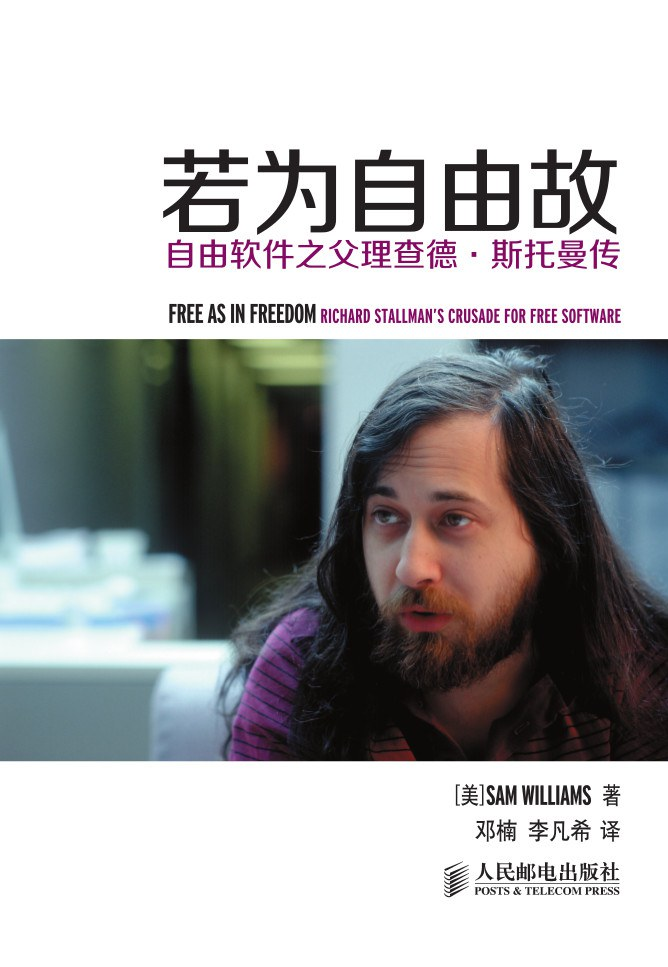

|  |
若为自由故：自由软件之父理查德·斯托曼传 |
理查德·斯托曼是自由软件之父，他是自由软件运动的精神领袖、GNU 计划以及自由软件基金会的创立者。
译者序一 若为自由故
在我看来，理查德·斯托曼注定会成为一位俄狄浦斯式的悲剧英雄。他固执，有原则，拒绝妥协。而这也就注定了他难以如愿。他追求着一份乌托邦式的理想，也恰恰是这个理想本身铸就了他的几分睿智、几分悲凉。作为自由软件运动的发起人，他大可从容地把同根通源的“开源运动”视作晚辈后生，在当今众多公司投身开源的热潮里，摘取本该属于他的果实。然而，他却认为开源运动强调的是软件开发模式，忽略了软件用户的自由。尽管绝大部分开源软件许可证也是自由软件许可证，尽管没几个人真的在乎“自由软件”和“开源软件”究竟有什么区别，他还是拒绝与开源运动有任何瓜葛。人们诉说着自由软件的成果，分享着 GNU/Linux、Apache 基金会的成功故事，斯托曼则在旁边不断泼冷水：自由软件运动远没有结束，我们离目标依旧很远。
译者序二 自由自在
前言
第1章 从一台打印机说起
这台打印机来人工智能实验室有多久了？斯托曼努力回忆着。这机器是施乐公司（Xerox Corporation）捐赠的。它可是新一代产品的原型，是从上一代的复印机改进而来。和上一代比，它不再是简单地复印文件，而是从网络上接收数据，打印成专业品质的文档。它诞生于著名的施乐帕罗奥多研究中心（Xerox Palo Alto Research Facility）。再过大约十年，将会发生一场打印机革命，那时，许多计算机厂商都会投身其中。而这款打印机则是这场革命的先行者。
可没过几周，这机器的缺点就逐渐显现了。其中最要命的，就是卡纸问题。凭着工程师的直觉，程序员们很快就洞察出了这问题背后的诱因。这台打印机是在复印机的基础上设计的。倘若是一台复印机，它旁边总会站个人直接操作它。遇到卡纸问题，这个人总能立即发现，着手解决，不至于有什么大影响。用工程师的行话讲，这系统需要用户参与。所以，对于复印机来说，卡纸问题也就没人关注了。设计复印机的时候，施乐公司的工程师们都没把卡纸的事情放在心上，专心去对付其他问题了。可把类似的机械部件用在打印机上，问题就来了。
在这台打印机之前，斯托曼也遇到过卡纸问题，他也是实验室里第一个提出解决方案的人。几年前，实验室还用着一台旧打印机，也有类似的问题。这台打印机的控制程序，运行在实验室里的一台PDP-11 计算机上。那会儿，斯托曼修改了这个控制程序，解决了这个问题。当然，他没法直接修理打印机来解决卡纸的问题。不过他能修改控制程序，让它定期检查打印机是否工作正常，再把检查结果传给实验室的核心计算机——一台 PDP-10。生怕哪个粗心用户忘了去查看打印机，斯托曼还让控制程序在卡纸的时候，向所有等待打印任务的用户发送一条提醒消息。消息简短明确：“打印机被卡住了，请去维修。”收到这消息的人都是等着要用打印机的，所以问题就迎“人”而解。
类似的巧法子是人工智能实验室的一大特色。尤其在其中的资深程序员之间，屡见不鲜。实际上，那些顶尖程序员不屑于用“程序员”这词。他们更喜欢用圈子里的行话，自称“黑客”。这词儿涵盖了不少内容：从抖机灵、甩包袱，到改进现有软件，优化计算机系统。而更深之处，则蕴含着旧时美国移民的智慧。对于黑客来说，有这样一条铁律：从头开发一个软件只是小儿科；改进一个程序才显真本事。
这条铁律，恰恰影响着施乐这样的公司，让它们乐意把自己的产品，以及配套的软件捐赠到黑客聚集的地方。要是这些黑客们改进了其中的软件，这些公司就可以把这些修改拿过来，化为己用，投入市场。用商业术语讲，这叫优势社会资产。公司花小钱，就能有个附属研发部门。
当初，一位在卡耐基梅隆大学的计算机博士，名叫布莱恩·瑞德（Brian Reid）。他开发了一个很不错的文本排版软件，名叫 Scribe。这软件可以让用户通过网络传递文档并且还支持自定义的字体，这在当时可是首例。之后这种功能的普及则带来了 HTML——如今 WWW 网络上的通用语言。1979年，布莱恩决定把 Scribe出售给一家在匹兹堡的公司，名叫 Unilogic。他当时刚好博士毕业，正打算把开发 Scribe的任务转手给别人，免得它流落到公有领域里。为了让这份订单更吸引人，布莱恩在 Scribe中动了点小手脚：他在里面放了个“定时炸弹”，让用户有 90天的免费试用期。90天一过，如果用户不交费，则不能再使用这个软件。
记忆总是这么有趣。二十年过去了，斯托曼关于这段经历的回忆大部分都是空白的。他都不记得当初为了什么事去的卡耐基梅隆大学，连具体哪年去的都给忘了。他也不记得那位教授是谁。根据 Scribe的作者瑞德的回忆，惹到斯托曼的那位很可能是罗伯特·斯布鲁（Robert Sproull）。他曾是施乐公司 PARC 研究所的研究员，如今在Sun 研究所任部门主管。20 世纪 70年代，斯布鲁在施乐公司 PARC研究所负责激光打印机程序的主要开发。他在 80年代拿到了卡耐基梅隆大学的教职，并在那里继续他的激光打印机相关的工作。
施乐公司后来还发出邀请，让一些程序员再使用它们的礼品。斯托曼说，要是再早几年，他没准也无法拒绝这种免费午餐。是那次打印机事件，让斯托曼建立起了道德防线。它不仅给了斯托曼足够的怒火去对以后的各种礼品心存戒备，更让斯托曼开始思考一个让他自己也坐立不安的问题：要是以后哪个黑客同行进到自己的办公室，向他索要代码，他究竟会不会拒绝复制代码呢？
“这是我第一次碰上这种保密协议，它很快让我明白，保密协议面前，总会有无辜的受害者”，斯托曼坚定地说，“在打印机事件中，我和整个人工智能实验室扮演了受害者的角色。”
斯托曼很快就会明白，要拒绝这些要求和邀请，不仅需要一些个人牺牲，更会被其他一些黑客们疏远。这些黑客虽然也对各种保密协议嗤之以鼻，但会更圆滑地对它加以评判。正因为如此，斯托曼被誉为“最后的黑客”。这使他与专有软件市场渐行渐远。拒绝提供源代码，在斯托曼看来，不仅违背了第二次世界大战以来深植入软件开发中的科学精神，更违背了“己所不欲，勿施于人”的道德准则。
第2章 黑客路漫漫
斯托曼演讲的主题，是关于自由软件运动的历史和未来。这次演讲的地点尤为重要。不到一个月前，微软的副总裁克雷格·蒙迪（Craig Mundie）就是出现在纽约大学斯特恩商学院（Stern School of Business），抨击 GNU通用公共许可证——简称 GPL。GPL是斯托曼16年前想出来的法律武器，用来对抗工业界中越来越盛行的专有软件。1980年，斯托曼经历了那次施乐打印机事件之后，预感到了软件专有化的潮流逐渐到来。为了抗衡这潮流，斯托曼提出了自由软件的概念：用户可以自由地使用、学习、修改和再发布软件。如今，GPL已经俨然成为了自由软件社区的核心工具。简单来说，GPL是一个软件使用许可证，它利用版权法，将自由软件锁定在公众可以自由使用和修改的领域。一旦锁定，这个软件就不会再被专有化。不仅仅是这个软件本身被锁定为自由软件，这个软件的任何衍生品也会成为自由软件。也就是说，倘若某个软件以 GPL 形式授权发布，这个软件以及任何它的衍生品，都可以被用户自由使用和修改。所谓一个软件的衍生品，也就是任何使用了该软件的代码的作品。哪怕一个软件仅仅使用了某个 GPL 授权软件的一小部分代码，这个软件也将被要求以自由软件形式发布。恰恰是这个原因，软件业的很多人把 GPL 称为病毒式许可证，因为它像病毒一样，“感染”所有它触及到的程序。
随着信息产业的发展，全球越来越依赖软件和软件标准。在这样的环境下，谁都无法忽视 GPL。哪怕曾经嘲笑过 GPL 的公司，也不能再把它视为空中楼阁。因为越来越多的软件都是以 GPL形式授权：Linux，一个最初由芬兰大学生林纳斯·托瓦兹（Linus Torvalds）于1991年开发出的类 UNIX 操作系统内核、GNU Emacs、GNU 调试器、GNU编译器等都是以 GPL授权的。这些工具在一起，形成了一个完整的自由操作系统。世界各地的黑客为这套操作系统贡献着代码。每个黑客也可以自由地拥有这样一套操作系统。如今，很多计算机公司都不再把这样一套自由操作系统视为威胁。相反， IBM、惠普、Sun等公司都依赖这个操作系统，并在这套系统之上开发和出售自己的软件产品。
既然在大学演讲，学院派的规矩是少不了的。演讲嘉宾介绍则是重要一环。对斯托曼的介绍可谓阵容强大。纽约大学的两位教授分别为他做两段开场白。第一位，是来自纽约大学斯特恩商学院高新技术研究中心的主任，麦克·乌列茨基（Mike Uretsky）。
乌列茨基草草结束介绍，走下讲堂。接下来对斯托曼做介绍的，是纽约大学计算机系的教授埃德蒙·舍恩伯格（Edmond Schonberg）。作为一个计算机程序员，又是 GNU 工程的贡献者，他很清楚该如何用词。他站在当代程序员的角度，扼要回顾了斯托曼的事业。
“想要了解斯托曼这个人，你必须要把各处细节联系起来，看成一个有机的整体”伊本·莫格林说道，他是自由软件基金会法律顾问，同时也是哥伦比亚大学法学院教授，“在斯托曼身上有着各种古怪脾气，这也许会把人拒之千里。而这份不同寻常，恰恰就构成了斯托曼这个活生生的人。他对挫败异常敏感，他对道德准则恪守不渝。他不肯妥协的个性，在关键问题上不肯让步的固执，这一切的总和，最终让我们看到了当今的斯托曼。”
第3章 黑客正年少
虽然斯托曼总比同龄人显得古怪很多，但李普曼还是决定让他追求自己的兴趣和热情。12岁那年，斯托曼参加了科学夏令营，之后上了私立中学。学校的老师建议让斯托曼参加“哥伦比亚科学之星计划”。该计划旨在为具有天赋的纽约中学生提供更多的学习机会。斯托曼参加了这个计划，于是每周六，他都会赶去哥伦比亚大学。
丹·柴斯（Dan Chess）也参加了科学之星计划，他回忆中的斯托曼，哪怕在众多同龄的科学爱好者之中，也算是古怪的。“我们都是书呆子、技术宅，可斯托曼在这圈子里仍是特立独行的”如今的柴斯已经是亨特学院数学系的教授，他回忆道，“他更是聪明绝顶。我见过很多聪明人，可斯托曼是我见过最棒的。”
另外一个科学之星计划的成员——赛思·布莱德巴特（Seth Breidbart），也提供了类似的证据。布莱德巴特如今也是个程序员，依然和斯托曼保持联系。他回忆当年只有 15 岁、剃了短发的斯托曼甚至有些“令人生畏”。
“这可难解释了。不是说斯托曼会拒人千里，只是说，在他身上，总能看到一种紧迫感。他知识丰富，可有些地方又非常爱钻牛角尖，非常固执。”布莱德巴特回忆说。
“紧迫感”、“爱钻牛角尖”、“固执”，这样几个形容词放在一起，放在今天哪个中学生身上，多半会让人觉得是青春期综合症的症状。其实，在 2001年12月的《连线》杂志中，就有一篇名为《天才综合症》的报道，采访了几个自闭症儿童患者，他们都在数学和科学方面具有天赋。报道中，患者家长对患者的描述，在很多方面都类似李普曼对斯托曼的形容。哪怕是斯托曼，提到自己精神方面，也曾犹豫再三。在一份 2000年《多伦多之星》报纸上的资料中，斯托曼曾描述自己为“濒临自闭”，以此解释自己一直以来在社交方面的孤僻，并介绍了自己如何不断克服这种心理。
这种判断和当下流行的“异常行为”研究是分不开的。《天才综合症》的作者史蒂夫·西尔贝曼（Steve Silberman）介绍，美国的心理学家在近年来才把自闭症作为一系列症状行为特征的统称。这些行为包括：不擅运动，不擅社交，但又对数学，计算机和类似的具有规律的系统有着极度的依恋，并擅长于此。在自闭症这样一个统称之下，理查德坦言，要是出生在当下，很可能就被拉去做检查了。当然，他的那群在计算机世界中的朋友，也一样跑不了。
“我当初也许还真有这种毛病吧，”斯托曼说，“可自闭症患者的另一个症状是对音乐和节奏迟钝。我还能跳舞呢，而且我对节奏特别敏感，喜欢复杂的节奏。这么看倒也未必是自闭症了。”
柴斯则非常反对这种推断：“我从不觉得斯托曼有自闭症。他当初就是社交方面有点障碍，可我们这群人都这样。”
而李普曼则认为确有此事。她说了斯托曼婴儿时期的一些事情，佐证这个结论。自闭症患者的一个显著症状，就是对噪声和颜色异常敏感。李普曼记起了两个事情：“当时斯托曼还是个婴儿，我们带他去海边，每次去，在离海有两三个街区的时候，他就开始大哭。去了三次，我们才发现，原来是他觉得海浪的声音太吵了，”接着，她又说了斯托曼当时对颜色的反应，“斯托曼姥姥的头发是亮红色的，每次他姥姥抱起他的时候，他也会大哭大叫。”
在接下来的十年，每周工作日，斯托曼都住在母亲的公寓；休息日则要跑去皇后区，在爸爸家里住。辗转之间，他也见识了两种完全不同的抚养方式。这一切，让他从此决定不会自己抚养小孩。理查德·斯托曼的父亲曾是参与过第二次世界大战的一名退伍老兵，于2001年去世。每当说起他，理查德·斯托曼总是对他又尊敬又恼火。一方面，这是一位有担当的士兵，他曾为了更好地帮助盟友，特地学习法语；另一方面，他又是个总会把事情变得残酷不堪的父亲。
李普曼把祖父母和外祖父母的去世列为第二个沉重打击斯托曼的家庭变故。“他当时悲痛欲绝。他和几位老人关系特别好，老人们去世之前，理查德特别开朗外向，都属于远近一带的‘孩子王’的角色。他们一走，理查德一下子变得极度消沉。”
“我总有一种感觉，觉得无法理解周围人在说什么，”斯托曼回忆当初，说着自己如何被悲痛感包围以至无法与外界沟通，“我明白他们说的每个词，可总觉得在谈话背后，隐藏着我无法理解的东西。我不能理解别人为什么对旁人的话题如此感兴趣。”
李普曼回忆起斯托曼少年时的个性：“开玩笑，俏皮话，双关语。只要你在桌上抛出一句话，他肯定能借此抖个包袱、耍个宝。”
在外面，斯托曼则省下了这些笑话，只留着和那些鼓励他追求兴趣的成年人沟通。其中一位是他在 12 岁那年的科学夏令营的顾问。他曾送给了斯托曼一份打印版的 IBM 7094 计算机的手册。作为一个迷恋数字和科学的少年，这份手册仿佛是来自上帝的礼物。那年暑假快结束的时候，斯托曼已经根据这份 7094 的手册，自己在纸上写了一份程序。他迫不及待地期待着有一天能在真正的机器上跑跑自己的程序。
可惜那会还是 20世纪 60年代，十几年之后才会出现第一台个人计算机。至于斯托曼第一次用上计算机，则是在这次夏令营之后几年——11年级结束的那个暑假。在那个暑假，斯托曼加入了IBM纽约科学研究中心，写下了他有生以来第一个跑在计算机上的程序——用 PL/I语言编写的预处理器。“我开始是用 PL/I写的，后来程序越写越大，大到计算机里放不下了，于是就用汇编语言重写了一遍。”斯托曼回忆说。
第4章 逆天行道，弹劾上帝
“关于政治活动，我最初的体验是在离婚期间。当时我走进皇后区公共图书馆，却发现关于离婚的只有一本。那里当时被天主教严格控制着，至少在我们住的阿母赫斯特区是这样的。这是我第一次意识到，我们的日常生活，被周围的各种权威力量悄悄地控制着。”李普曼说。
重回童年居住过的纽约市曼哈顿上西城，李普曼被周围的变化震惊了。十五年前，她离家去亨特学院读书。如今，由于战后住房资源紧张，当地居民对高楼有大量需求。为了建高楼，几个街区成了一个政治决斗场。人们分成了两派：一派人，主要是政客和商人，他们希望把这一片拆迁扩建，以应付越来越多的白领移居到这里；另一派人，主要是来自爱尔兰或波多黎各的房客，他们都不富裕，所幸已经在这里找到了便宜舒适的住房。他们不想请来白领租户，因为那样会抬高当地房价和租金。
一开始，李普曼不知道站到哪一边。作为一个新来的住户，她觉得的确有必要扩建。可作为一个拿着微薄收入的单身母亲，她和那些房客有着一样的忧虑，觉得周围越来越多的项目都是为有钱人开发的。心中忿忿不平，李普曼开始寻找机会，来和庞大的政治机器做斗争，避免让政客把上西城变成上东城那样，只供有钱人吃喝玩乐。
“他在哈佛的第一年很痛苦，”丹·柴斯——另外一位去了哈佛大学的科学之星的学生，回忆道，“简单的人际交往对于斯托曼来说都是非常困难的。可这种交往在哈佛又是无法避免的。哈佛校园就是个大社交场。”
有得就必然有失，斯托曼在课堂上的得意，换不来社交上的成功。其他数学党的成员一般都会凑在一起讨论数学 55 的作业，而斯托曼则自己一个人应付作业题。住宿问题上斯托曼也坚持如此。在哈佛大学住宿申请的表格上，斯托曼清晰地说出了自己对室友的要求：“我说我希望能有个几乎看不见、听不见、摸不着的室友。”宿舍管理部门这次倒是难得如此识相，竟然接受了斯托曼的要求，在他入学的第一年，给他安排了一个单人间。
尽管众人已经公认，斯托曼会是个一流数学家，也是个非正式的辩论能手，可他自己却一直避免参加各种有明确排名或分界线的竞赛。布莱德巴特清晰地记得，斯托曼大一的时候，大家眼看着他回避参加帕特南竞赛（Putnam Competition）。帕特南竞赛是专门针对美国和加拿大数学系本科生的竞赛。参赛者借此可以知道自己的数学水平，更重要的，比赛的结果经常被各大院校当作选拔研究生和博士生的依据。按照学生中间的流言来看，如果拿到好成绩，就可以去任何一所大学读研究生或博士，而且是免学费，全额奖学金。当然，这也包括哈佛大学。
斯托曼说：“同样的原因，我也不喜欢下棋。每次我下棋的时候，我都害怕那种一步走错，满盘皆输的情况。而这种恐惧，最后总是成真。”
传言中说，人工智能实验室里的计算机对外开放，随便谁都可以坐到终端前摆弄计算机。不过，斯托曼还是觉得按照原计划行事比较妥当。斯托曼找到一位在这里上班的雇员，问他能不能送自己一份使用手册。斯托曼回忆：“那人说他手头确实有几份闲置的手册，可好多东西都没写在手册里。怎么说，他们也是黑客。”
在对方的帮助下，斯托曼最终得到了一份比手册更好的东西：一个在实验室的工作职位。他的第一个工作任务是在 PDP-10上写一个PDP-11 的模拟器。于是，他第二周又来到人工智能实验室，找了个终端，开始写代码。
斯托曼很快了解到，人工智能实验室这种先到先用的原则，很大一部分要归功于当年一批警觉的小团体。其中很多人，都参与了当年国防部资助的 MAC 项目（Project MAC）。在这个项目里，他们开发了第一个分时操作系统。而这个小团体中的有些人，如今已经在世界计算机史册上留了名。包括实验室中的 Lisp 专家理查德·格林布拉特（Richard Greenblatt），他设计了国际象棋程序 MacHack，让休伯特·德莱弗斯（Hubert Dreyfus）关于人工智能的观点受到重创；还有著名的杰拉尔德·萨斯曼（Gerald Sussman），他曾设计 HACKER这个程序，利用机器人解决堆垛问题；也有著名的数学怪才比尔·高斯伯（Bill Gosper），他当年发现了生命游戏（LIFE game）中的模式并因此获奖。
斯托曼在这里学到的东西里，还包括黑客们解决问题的各种新颖技巧和相关的轶事。这其中，就包括黑客们如何打开教授们紧锁的办公室门，“解放”被囚禁的计算机终端。哈佛大学的计算机终端每天都被娇生惯养；相比之下，麻省理工学院的教授们更了解如何应付有限的终端资源。要是哪位教授，把某个终端锁在自己的办公室里过夜，黑客们就会想法把终端重新搞到手。之后，还会大摇大摆走到教授面前，劝诫他不要如此对待实验室的同僚。黑客们的做法多种多样，有些人会直接撬锁，他们自称这是“黑”锁术；有些人则会把天花板打开，爬到天花板上面，从天花板和房顶中间的通风空隙中爬入教授的办公室；在大厦的第九层，地板和楼层地面中间有空隙，本来是用于铺设机房的电线，而黑客们则会撬开地板，从下面溜进办公室。斯托曼说：“我当初还看到过一架手推车，上面放着一个实心的圆柱形金属，这东西后来就曾用来撞开办公室的门。”
这种工作的结果之一，就是运行在实验室核心的 PDP-10 计算机上的操作系统。它被称作 ITS，全称是“不相容分时系统（Incompatible Time Sharing system）”。这个系统从头到脚都体现着黑客的文化。它的诞生，本来是用来抗议 MAC项目的操作系统：CTSS，即“兼容型分时系统”（Compatible Time Sharing System）。这种抗议从名字中的“非兼容型”几个字上就能看出来。当时，黑客们觉得 CTSS 的很多设计太过严苛，因为它限制了程序员改进现有程序的行为。沿袭着黑客们一贯以来的作风，设计 ITS的决定本身就是政治上正确的。CTSS本身是为 IBM 7094 设计的，ITS 则是为 PDP-6 设计。为了让黑客们更好地写出自己的操作系统，人工智能实验室的管理员保证可以让黑客们使用 PDP-6 计算机。在分封制度盛行的学术圈，这策略确实奏效。虽然 PDP-6以前是和其他几个系共用的，可最终还是归了人工智能的研究人员。
尽管 ITS会吓跑一些门外汉，但它却比其他商业操作系统提早几年实现了很多特性，甚至有些特性是今天很多商业操作系统都没有提供的。这包括多任务系统、在线调试任何运行中的程序、全屏编辑等。斯托曼来之前的那段时间，黑客们终于利用ITS和这台PDP-6做基础，正式宣告自己独立于 MAC项目。
斯托曼回忆：“ITS内部有一套非常优雅的机制，可以让一个程序实时监测另一个运行中的程序。你可以获得另外某个程序的各种信息，内容清晰，接口明确。”
通过使用这个功能，斯托曼得以深入研究其他黑客所编写的程序是如何在计算机上工作的。另外一个功能，就是允许一个程序暂停另一个程序，让那个程序停在指定的两个指令之间。在别的操作系统里，类似的功能只能让程序停留在某个系统调用中，把程序停在这个状态，会有很多内部隐藏状态用户都看不到。而在 ITS里，这一功能则可以保证一条指令一条指令地监视另一个程序运行，并且能做到停顿之后，一样能继续运行。
斯托曼说：“如果你说，‘把这个任务暂停’，那它肯定会停在用户态。而且会停在两条用户态的指令中间。任何运行过程中的变量状态，都会保留。你再说，‘继续跑它’，它就真的会继续跑下去，不会因为暂停而搞乱程序，导致前后不一致。还不止如此，你还能把某个变量或者某个状态给修改了。让它继续跑，然后再把它改回去，这程序就能和当初一样。所有状态都是用户可见的，没有什么隐藏状态。”
在人工智能实验室，斯托曼的政治活动更加积极，产生的矛盾也更尖锐。在 20世纪 70年代，学校的一些教授和管理员一度发出通知，说即将停止在实验室的计算机上运行 ITS，也将停止支持很多黑客们喜欢的设计。到了 70年代中期，一些教授开始对文件的安全保护提出要求，要求他们能够控制哪些用户才能访问自己的文件。可人工智能实验室的这些黑客们，还是坚持要维护一个没有控制的系统。
所谓用“回车”做密码，就等同于没有密码。这个密码让其他用户也可以访问自己的账号。这和以前没有密码的日子没什么分别。这就是斯托曼和黑客们要表达的：他们拒绝任何光鲜亮美的枷锁，他们会嘲弄任何企图使用枷锁的想法。他们认为学院的计算机，甚至包括计算机里的文件都应该是公有的，而不是属于任何个人的财产。斯托曼在一次为 1984年出版的《黑客》一书的采访中，很骄傲地提到：当年计算机科学实验室里，有五分之一的人换了“回车”做密码。
第5章 自由一隅
80年代后期，斯托曼每周都工作 70～80 小时，编写 GNU 工程中最基础的那些自由软件，双手的剧痛让他无法容忍，以至于他曾一度雇用了一位打字员。今天，他用的键盘，是一种特殊的，比常规键盘按键力度更小的键盘。
“在印度，很多人对自由软件感兴趣。因为他们觉得这样可以用很低的成本，建设起自己的计算机基础设施，”斯托曼说，“在中国，自由软件的概念就传播得相对慢了一些。我们经常把软件自由和言论自由并提，表示这是软件用户的一种基本自由，但听众都不太理解。不过无论如何，我这次的中国之行还是在一定程度上提高了自由软件的关注度。”
话题很快转到 Napster，这是一家加利福尼亚州圣马特奥市的软件公司。这几个月，这家公司成了各大媒体的宠儿。这家公司开发了一款备受争议的软件，使得音乐爱好者之间可以互相复制音乐文件。借着互联网的东风，这类称作 P2P（即端到端）的软件逐渐流行。如今， Napster 俨然成了大型音乐盒，让各路音乐爱好者可以免费欣赏音乐。这一下子就惹恼了各大唱片公司。
“中国的饮食真是博大精深，”斯托曼大声说，这要算是他整个上午嗓门最大的一次了，“各种我在美国都没听说过的食物。还有很多当地特产、当地美食。当时我又突然想起来，我要办份杂志，专门记录每顿大餐的菜谱。”
当说起版权作品的时候，斯托曼把整个领域分为三个类型。第一个类型是所谓的“功能类”。软件、辞典、教科书都属于此类。第二个类型可以称为“证据类”。科技论文、古籍文献都属于此类。这些作品，如果可以被任意修改，则没有了价值。这一类也同样包括对个人感受的记录，如日记、游记、自传。修改这些作品，则会影响到对某人的回忆或观点。因此，斯托曼觉得对此类作品，读者不能有权修改。第三类则是“艺术类”，包含了艺术和娱乐作品。
我问他，法庭是不是会接受这种放任的观点。斯托曼打断了我说：“这是个错误的问题。你把这个话题从道德伦理的领域转移成了法律领域里的释法问题。这是一个话题的两个完全不同的方面。从一个反面跳到另一个是没有任何意义的。如今，法庭对于这些现有法律的解释往往会非常严苛，因为这些法律当初都是被出版商们极度拥护才被制定出来的。”
这段话反映出了斯托曼的政治哲学：现有的法律系统保护各大公司，让他们能利用现有版权法保护自己的软件，但这并不意味着计算机用户必须得遵守所谓的规则。自由本身是个伦理问题，不是法律问题。他说：“我们需要超越现有法律，暂时忘记现在实际是什么样，去思考我们究竟应该要什么样。我不是要立法，而是在考虑法律应该做些什么。我觉得，禁止朋友之间分享复制品的法律，和种族歧视法一样，不该得到尊重。”
红帽公司总裁罗伯特·杨（Robert Young）总结理查德·斯托曼看似矛盾的政治行为时，说：“我崇拜、也尊敬理查德和他所做的一切。我对他唯一的批评就是，有些时候，他对待朋友甚至比对待敌人还要无情。”
第6章 Emacs公社
“家”这个字，在理查德·斯托曼的心中，有着特别的分量。他少年时，家中的变故和经历让他直到上了大学，才对家这个概念有所感悟，并心存感激。他曾把哈佛的宿舍当作自己第一个真正的家。描述起当年离开宿舍的时候，他甚至依然心存悲伤。有一次，他提起自己的大学生涯，说到大学期间最悔恨的一件事情就是被哈佛踢出校门。我问他究竟是触怒了何方神圣，才被赶出学校的。这才发现斯托曼早有准备：“哈佛有个规矩，你修了太多的课程，就必须得毕业了。”斯托曼道。
杰拉尔德·萨斯曼是一位麻省理工学院的教授，也曾经是人工智能实验室的一名成员。回忆起斯托曼，他赞叹：“他太特别了。思维清晰，设计流畅。”1975年年初，萨斯曼曾邀请了斯托曼加入一个研究项目。这个项目非常复杂，需要通过编写程序，让计算机能够像人类的电子工程师一样分析电路。这个项目需要一位 Lisp语言的专家，同时，还要了解人类是如何解决类似的电路分析的问题。Lisp语言曾是专门设计用来编写人工智能程序的一种计算语言。
这些正式项目之外，斯托曼也会花时间维护自己的个人项目。黑客们都喜欢改进实验室的各种基础软件。斯托曼当时手头最大的个人项目就是实验室的一个编辑器软件，名为 TECO。
20世纪 70年代，斯托曼在 TECO上的工作和之后的自由软件运动是一脉相承的。而这段历史在计算机史上，也值得一书。20 世纪50～60年代，计算机刚刚进入大学校园，所谓的编程还是个很抽象的概念。那时的程序员，如果想要和计算机沟通一下，就必须得拿着一大摞卡片，上面打着孔，记录着软件中的指令。他们得把这一叠卡片交给系统管理员，让管理员把它们一张一张插到计算机里。计算机执行完卡片上的指令，然后把结果用打孔的方式，输出在另外几张卡片上。程序员则拿着这些计算机输出的卡片，回去分析解读。这个流程，通常被称为“批处理”。批处理是个非常费时费力的活，而且也给了计算机管理员太大的权力。黑客们痛恨权威的传统，恐怕很大一部分原因要归咎于当时的计算机管理员权力过大，他们有权决定哪个程序优先运行。
1962年，很多计算机科学家和黑客都参与了麻省理工学院的MAC 计划（Project MAC）。这一计划是人工智能实验室的前身，它曾试图解决批处理带来的问题。MAC 计划引入了“分时”（Time sharing）的概念。这个概念之前曾叫作“偷时”（Time stealing），它利用一个程序运行中间的空隙来执行另外一个程序，由此，多个程序可以有效地利用计算机。同时，电子打字机也被引入进计算机系统，作为人际交互的设备。从此，人们再也不用靠打孔来和计算机交互，人们可以利用打字机，把命令敲进去，然后等着计算机把结果一行一行打印到纸上。
20世纪 60年代，交互界面的设计也有了长足进步。在 1968年，一次讲座从此出名。讲座上，斯坦福研究中心的科学家，道格·英格巴特（Doug Engelbart）展示了第一款现代图形用户界面的原型。他们把计算机和电视机连起来，并且还加入了一个定点设备——英格巴特把这个定点设备昵称为“老鼠”，也就是今天的鼠标。这套系统的交互性比麻省理工学院的分时系统更好。他们把电视机当作一个高速打印机，用来显示各种输出。这套系统还允许用户使用鼠标来移动屏幕上的光标，并且实时地显示出光标的位置。用户可以使用鼠标把光标移动到屏幕上的任何字符上。
不过，这些发明要等二十年才能进入市场。到了 20世纪 70年代，显示器逐渐开始作为显示设备，取代了电子打字机。这一改变，使得计算机可以使用全屏幕来显示。这就不必像以前一样，每次只打印几行内容在纸上。
人工智能实验室的 TECO程序，是早期的几个使用全屏幕显示的程序之一。TECO 是“文本编辑及修正程序”（Text Editor and COrrector）的缩写。它的前身，诞生于 PDP-6和电子打字机的年代，是黑客们把它一步一步升级至今。
比起以前的那些编辑器，TECO是一大进步，但仍旧存在不足。如果要创建并编辑某个文件，程序员必须要输入各种命令，才能完成不同的操作。这个过程非常抽象。今天的编辑器，每敲进一个字母，都会在屏幕上显示出来。而使用 TECO 来编辑文件，则需要输入一些命令，然后告诉它“命令结束”，然后才能把文件修改好。经过一段时间的练习，一名黑客可以使用一套漂亮的命令来完成很大的修改。不过，正如斯托曼所说，这种技能是需要“类似下盲棋一样的脑力消耗”。
为了辅助这种编辑流程，人工智能实验室的黑客们开发了一套系统，可以把屏幕分为两部分，分别显示正在编辑的文件内容和输入的命令。这个小改变的确有用，可是想要使用 TECO依旧需要很多技巧，以及事先规划。
在当时，除了 TECO，还有几个其他的全屏编辑器。1976年，斯托曼去了一趟斯坦福的人工智能实验室。在那里，他见到了一个叫作 E 的编辑器。这个程序有个功能，可以在根据用户的输入，实时更新显示器上的内容，让用户看到最新的修改结果。用 20世纪 70年代的话讲，E 是早期的几个“所见即所得”的编辑器之一。所谓“所见即所得”，常常写作 WYSIWYG，即 What you see is what you get的缩写。它意味着用户可以直接在显示出来的文本上进行编辑，而不用再另外使用一个后台的编辑器程序 6。
斯托曼一下子对这技术感兴趣了，他决定回到麻省理工学院之后，把这个功能加到 TECO 上。他发现 TECO 上有个功能叫作“Control-R”。这个功能是卡尔·米克尔松（Carl Mikkelson）开发的。使用这个功能的快捷键和它的名字一样：Control-R。利用这个快捷键，用户可以让 TECO实时地显示出编辑的内容。斯托曼对这个功能还做了个不起眼但影响深远的修改：他允许用户把一连串 TECO命令绑定在快捷键组合上。这一连串的命令称为“宏”。TECO 的资深用户早就把各种常用的命令组合记下来了。斯托曼的这个改变让他们可以通过宏更快捷地使用这些组合。最后的结果，是一个允许用户自己扩展的“所见即所得”的编辑器。盖·斯蒂尔（Guy Steele）曾是当年人工智能实验室的一名黑客，他回忆起斯托曼的这个改动，说：“这在当时是个突破 。”
斯托曼回忆，加入“宏”之后，各种创造接踵而来。他说：“大家都开始把各种常用命令的组合写成宏，然后把各自的宏互相分享，大家一起不断改进，再分享。这样，这些宏越来越强大，并且涵盖了很多常用操作。这些宏俨然成为了一套单独的系统软件。”
这个项目的名字被称为 Emacs，是斯托曼建议的名字。Emacs是Editing macros 的缩写，意思是“宏编辑器”。它标志着宏出现之后的又一个进步。它也参考了当年各种软件的名字，斯托曼注意到，在 ITS系统上，还没有哪个软件名是以 E开头的。把它叫作 Emacs，用户就可以自己在设置中把它叫作 E，一个字母就能运行这个程序。这又得归咎到黑客简约的风格上了。
虽然斯托曼无法阻止布莱恩给用户装上“定时炸弹”，可他还是有自己的一套法子，来遏制其他类似的行为。作为 Emacs代码的主要维护者，斯托曼开始利用他的力量发起一轮政治影响。当时，为了去掉系统的登录密码，他正跟计算机系的机房管理员闹得不可开交。在冲突的关键时刻，他发起了一轮“软件抗议”：如果实验室的成员不反对系统登录密码，斯托曼就不给他们 Emacs用。这次的抗议活动并没有进一步提升斯托曼在社区中的偏激形象，不过，它传达了一个明确的观点：社区的成员必须努力弘扬黑客的价值观。
渐渐地，Emacs成了黑客文化的宣传品。Emacs有着极强的扩展性。这种扩展性增进了用户之间的交流合作。不仅如此，Emacs甚至要求这样的合作。如果用户不把自己的修改贡献出来，就很可能用不到最新的版本，用不上最新的功能。而每次更新，各种新功能可是不少。如今，GNU Emacs 的用户遍布全球，大家已经把它扩展得异常强大。用户可以把它当作电子表格、计算器、数据库、网络浏览器等。以至于之后的 Emacs 开发者，都找不出什么词来概括 Emacs 的功能了。斯托曼说：“这就是我们想要传达的。Emacs 里包含的东西既有用，又有趣。”
和斯托曼同时代的人工智能实验室成员更是感谢斯托曼的贡献。哈尔·埃布尔森（Hal Abelson）曾是麻省理工学院的一名博士。20世纪 70年代，他曾在萨斯曼教授手下做过研究。之后，帮助斯托曼成立自由软件基金会，并成为董事会成员。形容起 Emacs，他说：“那绝对是个精品佳作！”他描述， Emacs 既可以让程序员不断添加新功能，又不会影响整个系统。斯托曼的经验为未来大规模合作开发的软件工程铺平了道路。“它结构稳定，可以接受世界各地的人贡献代码。这种松散的大规模协作开发，恐怕要算前无古人了。”
盖·斯蒂尔对此也表示了钦佩。如今，盖·斯蒂尔已经是 Sun公司的一名科研人员。回忆起斯托曼，他脑海中浮现的是“一位才华横溢的程序员，他可以瞬间写出大量几乎没有 Bug 的代码。”尽管他和斯托曼性格不太合得来，可他们俩还是合作了一段时间。这段时间里，盖·斯蒂尔对斯托曼的那种暴风闪电般的编程风格印象深刻。他记得在 20世纪 70年代末，他俩曾一起为 Emacs添加“重排版”的功能。所谓“重排版”，最初是斯蒂尔的点子。它可以让用户使用快捷键，来为 Emacs 中编辑的代码重新排版，使得代码更加易读。这个功能更增强了软件“所见即所得”的质量。这个功能一下子吸引了斯托曼的注意，接着斯蒂尔和斯托曼决定一起开发这个功能的改进版。
斯蒂尔回忆：“我们早晨开始坐到电脑前。我敲键盘，他就坐我身边，告诉我怎么写。”
俩人就这样，持续开发了 10个小时。斯蒂尔说，这 10个小时，他们俩谁也没休息，甚至都没聊多余的话。到最后，他们把整个功能精简到一百多行代码。斯蒂尔回忆：“我当时手指就没离开键盘。我就觉得我俩的想法直接就流到了屏幕上。他告诉我写什么，我就按他说的写。”
整整 10 个小时，光是这时间长度就足够显示出斯托曼的编程风格了。斯蒂尔离开实验室，走出技术广场 545号大楼。外面已是夜幕降临，他虽然早就习惯了这种马拉松式的编程，但这次却别有一番滋味。跟斯托曼一起工作，他必须要集中精力、心无旁鹜。如今回忆起来，斯蒂尔说，斯托曼的这份才智和精力，既让人振奋，又令人生畏。“我回想起来，第一感觉是那是个很好的经历，流程紧凑、快速高效。再细想想，妈呀，我可不想再来一次。”
第7章 道分左右，义无旁支
对于 UNIX的资深用户来说，这个消息显得太过理想主义，甚至有些自大傲慢。面对已经非常成熟的 UNIX系统，这则消息不仅号称要从头克隆一套类似的操作系统，甚至还要在开发过程中改进现有UNIX 的设计。这则消息的作者声称，新的 GNU 系统会提供各种常用软件，包括文本编辑器、用来执行各种命令和程序的 Shell、编译器，以及“一些其他的东西”。除此以外，它还提供很多原本 UNIX并不具备的功能，包括一套基于 Lisp 语言的图形用户界面；一个防崩溃的文件系统；以及一套基于麻省理工学院内部网络系统的网络协议栈。这些都非常吸引眼球。
似乎是命中注定一般，斯托曼的 GNU 系统没能赶在感恩节假期结束前发布。不过，斯托曼依旧赶在 1984年1月的时候做出了不小的成果，他自己也完全融入到了 UNIX软件开发的世界之中。对于这位从 ITS世界来的架构师来说，在 UNIX中设计软件似乎更像是设计城郊购物中心，而非设计紫禁城皇宫。即便如此，设计成类 UNIX系统依旧有它的优势。ITS的确强大，但仍有一处致命缺陷：麻省理工学院的黑客们创造的 ITS 系统，是专门针对当时强大的 DEC PDP-10计算机设计。可到了 20世纪 80年代，人工智能实验室的管理员决定淘汰掉实验室的 PDP-10计算机。当年辉煌一时的 ITS 系统也因此成了一座无人的“鬼城”。而 UNIX 的设计则与此不同。它的设计非常强调移植性，它并不依赖于某个特定的硬件环境。因此，面对硬件更替，UNIX 毫无压力。UNIX 最初是由当时 AT&T 贝尔实验室的几个年轻科学家创造的。之后，这套系统被大家纷纷传阅，不断改进。在资金并不富裕的学术界，UNIX 系统甚是流行。和麻省理工学院的同僚们不同，UNIX 的作者可用的硬件资源非常有限。他们必须把软件设计得可以在各种良莠不齐的硬件上运行无阻。最初是针对 PDP-11系统设计，PDP-11 是 DEC 推出的另一种 16 位计算机。在麻省理工人工智能实验室的黑客们看来，它顶多只能用来跑些小程序。之后， UNIX又陆续开始支持 32位计算机，比如 VAX11/780。到了 1983年，一些公司开始推出更强大的一代被称作“工作站”的桌面计算机。其中，以 Sun公司产品最为引人注目。这些运行着 UNIX的计算机有着更小的体积，却和当年的 PDP-10性能相当。
为了增强可移植能力，负责 UNIX开发的程序员在软件和计算机之间加入了一个抽象层。和人工智能实验室的 PDP-10 上的 ITS 系统不同，UNIX并不使用针对某个硬件平台所特有的系统资源进行开发，而是采用了一种更为通用和现成的实现方式。于是，开发者们可以放眼全局，集中设计各个组件之间的协调机制，设计组件的接口标准，而不必把精力分散到每个组件的开发和移植上。他们由此创造了一套系统，可以轻易地被移植到各种计算机上。如果某个用户对哪个组件不满意，他们可以按照定义好的接口标准，修改现有组件，甚至重新开发一个同样功能的组件，再把改进的组件放回原位，一切依旧会运行正常。简而言之，抛开美学上的意义不谈，UNIX的设计具备极大的灵活性，这也促进了计算机这个市场的发展，更为 UNIX带来了无限生机。
一开始，这看上去是个双赢策略：黑客们可以在最优秀的项目里工作，还可以为实验室带来最新的计算机技术。然而，这种行为的弊端也逐渐显露。黑客们投入大量时间去开发前沿的商业软件，而无暇维护实验室的软件系统。很快，各个公司开始把黑客们一个个雇走。随着黑客们的离去，实验室的程序和机器要么没人修，要么也要等上好久才有人打理。理查德·斯托曼说，更糟糕的是，实验室正经历了前所未有的“人事变动”。以前，黑客们虽说人少，却是实验室中很重要的一伙人。如今，黑客几乎绝迹，而“不喜欢 PDP-10 的教授和学生则依旧那么多。”
几年之后，斯托曼回忆起那时的情景：“那些教授们说，‘没有足够的黑客们来维护 ITS 系统，我们将会面临各种灾难。要避免这些发生，我们只能投靠商业软件。我们可以让商业公司来提供维护。’后来的事实证明，他们的这番论调大错特错。可当时他们的确这么做了。”
到了 1982年，斯托曼关于密码和安全设施的抗议早就内外闻名。以至于有不少人工智能实验室以外的人，通过 ARPAnet 网络，使用斯托曼的登录账号，访问人工智能实验室的计算机。他们当初使用的 ARPAnet，是如今互联网的雏形。它曾是一个研究项目，旨在构造一个大型计算机网络。这个网络之后不断发展，最终成了今天大家见到的互联网。唐·霍普金斯（Don Hopkins）在 20 世纪 80年代是加利福尼亚州的一名程序员，他当年就曾利用斯托曼的账号访问人工智能实验室的计算机。他从黑客圈的小道消息里听说，想要使用麻省理工学院大名鼎鼎的 ITS系统，只需要使用一个简单的用户名和密码登录就可以：用户名， RMS；密码， RMS。
Lisp 是一种非常优雅的编程语言。它最初由人工智能领域的先驱，约翰·麦卡锡（John McCarthy）发明。20 世纪 50年代，他曾是麻省理工学院人工智能领域的科学家。他发明的 Lisp 语言，非常适合编写复杂程序，来处理不具备很好结构的数据。Lisp这个名字来自LISt Processing，即链表处理。之后，约翰·麦卡锡离开了麻省理工学院，去了斯坦福大学的人工智能实验室。麻省理工学院的黑客们则改进了 Lisp语言，并创造了一个 Lisp方言，名为 MACLISP。其中的“MAC”，指的是“MAC 项目”。MAC 项目是一个由美国国防部高级研究计划局（DARPA）资助的项目。借助这个项目，诞生了如今的人工智能实验室。整个实验室由黑客理查德·格林布拉特领导。在 70年代末期，他们设计出了专门用来高效地执行 Lisp 程序的计算机，命名为 Lisp机。接着，开发了一整套基于 Lisp的操作系统。到了 1980年，由 Lisp 机项目产生了两家商业公司：由人工智能实验室的前主管，罗素·诺夫斯科（Russell Noftsker）创立的 Symbolics 公司；和理查德·格林布拉特创立的 “ Lisp 机公司 ”（Lisp Machines Incorporated），即 LMI。
Lisp机的软件系统本身是黑客创造的。它的版权归麻省理工学院所有。但是，按照黑客传统，任何人都可以获得源代码、复制或修改。然而，这种自由分享的方式却让商业公司很是烦恼：公司的产品无法在市场中显得独一无二，也就少了商机。为了获取优势、吸引用户，两家公司开始从人工智能实验室里挖走黑客。它们把黑客们安排在自己公司里，让他们的代码不再流入人工智能实验室。
一开始，斯托曼倒也接受了 Lisp机商业化的行为——这无非就是意味着他得多承担些实验室的活，不过斯托曼也没抱怨什么。LMI和Symbolics的 Lisp机操作系统都是从麻省理工学院得到的授权，从人工智能实验室的 Lisp 机操作系统上衍生而来。斯托曼当年的任务是继续开发实验室的 Lisp 机系统，让它能与最新的研究成果同步。Symbolics公司允许斯托曼查看该公司 Lisp操作系统的源代码，但是禁止复制。斯托曼说，当年Symbolics和人工智能实验室有个“君子协定”：他们允许实验室在自己的操作系统中，实现 Symbolics公司的操作系统中的类似功能，并且允许实验室继续按照黑客的传统发布实验室开发的代码。
1982年3月16日，斯托曼清晰地记得这一天，那是他的生日。在这一天， Symbolics 的主管们决定不再遵循当初的那份君子协议。LMI是 Symbolics的直接竞争对手，它们使用的操作系统也是来自于人工智能实验室，而实验室的操作系统则是随时更新的，且包含Symbolics系统最新特性的。Symbolics于是决心彻查人工智能实验室Lisp操作系统的代码，并且严格执行许可证上的协定。如果人工智能实验室还想继续使用自己的操作系统，并且还希望和 Symbolics公司系统保持同步，那么最稳妥的解决方案恐怕就是转用 Symbolics的系统，并且切断与 LMI代码共享。
斯托曼在那时候负责维护实验室中的 Lisp 机，最开始的几个月还多亏了 LMI 公司的创始人——格林布拉特的指点帮助。当下， Symbolics的做法可是惹恼了斯托曼。那些在 Symbolics公司工作的黑客们都曾给实验室的 Lisp 机系统贡献过代码，如今，还有很多错误和 Bug 遗留在这些代码中，甚至有些特性还都是半成品。如今， Symbolics高层的做法无疑相当于下了“最后通牒”，令身在 Symbolics的黑客们无法改进麻省理工学院的 Lisp 机系统。斯托曼也发起了反攻，他切断了连接实验室和 Symbolics公司的微波通信信道，发誓再也不会在 Symbolics生产的机器上工作。并且决心要继续完善麻省理工学院的 Lisp机系统，以此帮助 LMI，打击 Symbolics。斯托曼回忆说：“当初我觉得，人工智能实验室是个中立国，就好像第二次世界大战时的比利时一样。如果德国入侵比利时，比利时就要对德宣战，就得和英法一个阵营。”
虽然斯托曼对这种排斥行为非常反感，但并没对此有什么行动。可 Symbolics的最后通牒则改变了一切，这事从此也不再是私人恩怨了。当 Symbolics公司不再给用户提供源代码的时候，斯托曼决心要对此进行反击。他日夜坐在他的办公室里，在麻省理工学院的 Lisp机系统上，实现了 Symbolics提供的各种新功能和 Bug修正。他把修改后的版本代码分发给各个用户，包括 LMI公司的客户。这样，LMI公司的客户也可以拥有 Symbolics系统类似的功能。
这也为斯托曼在黑客圈子里平添了几分名气。斯托曼早就因为Emacs 而名声大噪。如今，他一个人单枪匹马，对抗整个 Symbolics公司的开发团队，而且这团队之中还尽是各色传奇黑客。斯托曼的这一行为本身，就足以成为信息时代的一段传奇。史蒂芬·李维在《黑客》一书中称这一行为是“黑客杰作”；并把斯托曼比作现代的约翰·亨利（John Henry）[17]。史蒂芬·李维在书中说，很多 Symbolics 公司工作的黑客们都钦佩斯托曼的能力。
无论曾投入过多少人力物力，整个 Lisp 机产业却仅仅是昙花一现。计算机小型化的脚步一步不停。带来了更新、更强大的微处理器。这一波趋势，如同风卷残云般，将其他竞争者一举赶出主流市场。
伴随这波风潮而来的，是成千上万的专有软件。每个专有软件都带着自己的使用许可证和保密协议扑向用户。令其他黑客无法触碰其中的代码。很多软件使用许可证对用户粗暴无礼。但是在 1983年，这些专有软件依旧成了主流，填补了市场。也让潜在的竞争对手望而却步。软件曾经只是各个硬件厂商的随机赠品，如今却成了业界新宠。当下，用户们开始极度索要新软件、新功能，至于是否可以知道软件内部究竟做了什么，则甚少提及。
作为一个无神论者，斯托曼不愿把这一系列事件归咎于命运、因果或是缘分。他决定避免使用专有软件，并且创造完全自由的一套操作系统及其外围软件，来帮助其他用户获得自由。做出这个选择，对于他来说是再自然不过了。毕竟，凭借斯托曼内心的那份反抗精神和他的智慧能力，他选择了一条少有人走的路。这条路，甚至还没被很多人发现。在他的一篇名为《GNU 工程》的文章中，斯托曼曾引用了犹太先贤希肋耳（Hillel）的话来表明他的决心：我不为我，谁人为我？我只为我，我为何物？此时不为，更待何时？
辞去工作可以让他在法律上与麻省理工学院断绝联系。不过，依然有很多人工智能实验室的朋友支持斯托曼的工作，让他得以继续使用实验室的设备。凭借斯托曼的能力，他在开发 GNU 系统之余，还兼职一些咨询师的职位，借此收入来支持 GNU 系统的继续开发。在从麻省理工学院辞职的过程中，他拒绝了任何机构拥有 GNU 系统。这位曾经一度畏惧社交活动的人，如今则把这种心理发挥到极致，让自己的社交障碍变成了一堵防火墙，隔离了各种可能的法律纠纷。
在项目开发的最初几个月，斯托曼甚至也把自己隔离在 UNIX社区之外。尽管他在 net.unix-wizards 新闻组发布的消息获得了很多同道的支持，但在最初阶段，只有很少人加入了这个工程。
当年一个 UNIX 用户组的一位领导李奇·莫林（Rich Morin）说：“整个社区（对于斯托曼的项目）的反响比较一致。大家都会说，‘嗯，不错，好啊。是个挺棒的想法。期待你的代码，希望能看到它成功。’”
可说到底，这可确实是个超级大的工程。凭着黑客做事风格，斯托曼决定尽量采用已有的自由软件。于是他开始调研已有的自由或免费的程序，试着修改它们并把它们纳入 GNU 工程之中。第一个相中的，是一款名为 VUCK 的编译器。它可以把 C 语言编写的程序转换成可执行的机器码。VUCK是荷兰人开发的，荷兰语中，是“自由大学编译器”（Free University Compiler Kit）的缩写。带着几分期待，斯托曼联系 VUCK 的作者，询问它们这个软件是不是自由的。作者告诉斯托曼，所谓“自由大学”，指的是阿姆斯特丹自由大学（Vrije Universiteit in Amsterdam）。虽然大学的名字里有“自由”二字，但并不意味着软件也是自由的。这番回复令斯托曼非常沮丧。
斯托曼回忆：“他的回复带着几分嘲讽。他说，这所大学是自由的，可编译器不是。由此，我决定为 GNU工程开发的第一个软件，将是一个多语言、跨平台的编译器”
放弃了 VUCK，斯托曼转向另一款名为 Pastel的 Pascal编译器。它由劳伦斯·利弗莫尔国家实验室（Lawrence Livermore National Lab）开发。Pastel的作者告诉斯托曼，这个编译器可以被自由传播和修改。遗憾的是，这款编译器占用内存太多，以至于在很多平台上无法运行。它会对整个文件做语法分析，然后把所有的状态都存入内存，等到编译结束，才释放所占用的空间。在当年，这种做法只能在大型机上行得通。而运行 UNIX的机器，普遍没有那么大的内存。哪怕是运行 32位 UNIX系统的机器，也很少能提供如此大的内存给一个程序。一开始，斯托曼还取得了一些小进展。他给这个编译器做了一个 C语言的前端，然后跑在内存较大些的 Vax机器上。可是，当他把这个编译器移植到 68010上的时候，编译器则总是崩溃。仔细查清原因，斯托曼发现是内存太小造成的。于是，他决定只能从头开发一个编译器。最终，他实现了这个编译器，并把它命名为 GNU C 编译器，缩写 GCC。不过，在 1984年，大家也还不知道这个编译器后续开发将会如何。于是，斯托曼一方面慢慢等着编译器相关的计划逐渐成型；另一方面着手开发 GNU的其他组件。
在 1984年9月，斯托曼开始开发 GNU 版本的 Emacs 编辑器。这个编辑器试图克隆并改进他主导了十几年的 Emacs项目。在当年， UNIX社区里有两大流行的编辑器：一款是Sun公司的创始人比尔·乔伊（Bill Joy）开发的 vi 编辑器；另一款是贝尔实验室的科学家，UNIX创始人肯·汤普森（Ken Thompson）开发的 ed 编辑器。这两款编辑器都很不错，也很流行。但是它们都没有提供类似 Emacs的扩展功能。为 UNIX系统提供一个 Emacs编辑器，斯托曼可以更好地展示他的才能，也能让更多 Emacs用户参与进来。
斯托曼曾说：“有时候，我真觉得我这辈子应该找来一大堆专有软件，给它们一个个破解刻成光盘，然后拿到街角去免费赠送给路人。没准那样倒是可以更快地给用户带来些自由。要比自己亲自操刀写软件方便得多。不过要是那样，可能很多人都不敢要我送出的光盘。”
随着 GNU Emacs 的发布，GNU 工程也慢慢地积累起了给大家读的代码。而 GNU 工程也逐渐要面对越来越多的琐事。越来越多的UNIX 开发人员开始使用 GNU 的软件，各种捐款、礼品，以及索取磁带的请求也接踵而至。为了解决这些非技术类问题，斯托曼拉来了一些挚友，组建了自由软件基金会（Free Software Foundation，FSF）。这是一个非营利组织，旨在促进 GNU 工程完成目标。理查德·斯托曼担任主席，斯托曼的很多朋友和黑客同道都成为了董事会成员。自由软件基金会为 GNU提供了一个对外的窗口。
罗伯特·查瑟尔（Robert Chassell）当年曾是 LMI 公司的一名程序员，之后成为了自由软件基金会的五个注册董事会成员之一。他曾在自由软件基金会担任会计。这个职务一开始并不起眼，后来却越来越重要了。
除了提供一个门面以外，自由软件基金会还吸引了很多抱有类似理想的程序员。UNIX市场融入了越来越多的竞争者，斯托曼的 GNU工程也逐渐占有了一席之地。UNIX 厂商们为了能栓住用户，它们开始拒绝为用户提供 UNIX 的源代码。不过这个行为最终倒让 GNU 获得了更多的用户。UNIX 界的人士曾一度把斯托曼视为不切实际的疯子。如今则有不少人把他看作软件界的预言家。
第8章 ST. IGNUCIUS
Top500.org是一个记录全世界超级计算机排名的网站。根据这个网站的资料，茂宜高性能计算中心的 IBM SP Power3 超级计算机可以每秒完成八千三百七十亿次浮点运算，世界排名前 25。这台超级计算机归夏威夷大学和美国空军共同拥有和维护。它主要负责完成军队补给调度计算和高温物理研究。
这些人都身穿“茂宜FreeBSD 用户组”（Maui FreeBSD User Group，MFUG）的 T 恤。所谓 FreeBSD，是一款从伯克利软件发行版的 UNIX系统分支而来的操作系统。而伯克利版 UNIX则是 20世纪 70年代由加州大学伯克利分校开发的一个 UNIX分支。说起来，FreeBSD倒还是 GNU/Linux的一个竞争对手。在黑客的世界里，斯托曼的演讲总会被记录拍摄下来，留作档案。作为当地的著名自由软件组织，茂宜 FreeBSD用户组可不能让同行失望。他们也要录音和录像，让远在德国汉堡、印度孟买、俄罗斯新西伯利亚等世界各地的黑客们都能听到 RMS的箴言。
斯托曼的这些演讲记录，就像感恩而死乐队（Grateful Dead）的现场演出一样，都是被追捧者现场录下、私下传递的。把斯托曼和感恩而死乐队做类比，可是有说头的。每当斯托曼描述自由软件的商业盈利模式的时候，他都会提起感恩而死乐队。这个乐队当年允许粉丝们在现场录音和录像，这就令它不仅是一个简单的摇滚乐队。它俨然成了感恩而死音乐部落的中心。逐渐地，这个部落越来越大，令感恩而死乐队拒绝了各种唱片公司的合约，完全靠巡回演出，就可以撑起整个乐队的开支。在 1994年，这支乐队的最后一次演出仅门票收入就高达五千两百万美元。
演讲最后，斯托曼简要地探讨了软件专利的问题。这个问题逐渐在软件业和自由软件社区中受到关注。专利的概念和想法本是为现实的物理世界准备。可是，如果把它用在信息世界中，就越来越显得古怪了。软件版权和软件专利这两个概念看似差不多，实则差距甚远。创作者可以借助版权禁止他人复制自己的代码，但却无法阻止别人利用不同的代码实现相似的功能或软件。换言之，一个开发者可以从头克隆一个现有软件的所有功能。只要他不去复制别人的源代码，就不会触犯版权法。这种克隆想法或功能的行为非常普遍。
可软件专利就不同了。按照美国专利局的说法，个人或公司的算法方面有创新想法，就可以提交专利申请，由公众来审核。理论上讲，专利拥有者需要将自己的发明公诸于众，而作为交换，专利拥有者获得法律保护，可以在二十年内禁止他人实现这个想法，计时从专利提交起开始。当年专利法设立的初衷是为了避免优秀的想法被当作商业机密封锁在公司内部，不被大众所用。但是实际上，到了软件领域，这个事情就变了样。软件专利的创新想法并不能让公众受益。因为大多数软件专利中提到想法往往是不言自明的。而专利法和版权法不同，它禁止任何人实现专利上描述的想法，哪怕开发者是独立开发的。
在软件世界里，二十年的时间可能覆盖了一个市场的整个生命周期。这样，专利就成了一种策略。当年，微软和苹果这些大公司为版权打得不可开交。而如今那些互联网企业，则使用专利来为自己开路，赶走竞争对手和新人。这里有个著名的案例：2000年，亚马逊购物曾试图为它的“一键购买”功能注册专利。简单地说，这个功能就是允许用户事先存储好个人信息——比如信用卡信息、收件人地址等——然后在购买商品的时候，只需要按一个按钮，就可以下单，不必再跳转到其他页面填写地址、付款等信息。对于大多数公司来说，软件专利更像是一种防卫措施。几个公司可能会合作共有一系列专利，用来阻止另外一个联盟的专利。尽管如此，还是有不少领域被软件专利占满，阻碍了各种可能的竞争对手，如图像处理领域、加密领域等。
看着斯托曼阐述自己的政治诉求，并不会让人迷惑或厌恶。他衣着朴素，说起话来有理有据，逻辑清晰。听众中一位提问：如果完全避免使用专有软件，可能无法用到最新的技术，该怎么办？斯托曼引述自己的信念，回答了这个问题：“我觉得自由本身比任何新近技术都重要。如果面前有一个先进的专有软件和一个技术落后的自由软件，那么我宁愿选择后者。因为无论如何，我都不会靠出卖自由，而换取更新的技术。我的原则是，如果我不能和你分享这个软件，我就不会使用它。”
为了让自己的演讲技能可以更加娴熟，他甚至还加入过 Toastermasters。这个社团旨在帮助人们提高演讲技能。斯托曼也曾向别人建议过 Toastermasters。他加入了这个社团，逐渐掌握了一些舞台技巧。
第9章 GNU通用公共许可证
1985年新春伊始，理查德·斯托曼完成了 GNU工程中第一个完整的里程碑式的软件：用Lisp语言编写的Emacs编辑器。为了能让别的用户可以真正自由地使用这个软件，他面临着两大挑战。首先，他需要改写出一个跨平台的 Emacs 版本；其次，他需要基于早期的“Emacs公社”探索一种全新的发布方式。
与 UniPress之间的纠纷暴露出了 Emacs公社契约中的一些不足：这些条款都过度依赖斯托曼个人在这个社区中的地位。对于那些斯托曼所没有触及到的领域，比如 1984年以前的 Unix系统，其他个人和公司都可以制定他们自己的规则。
在GOSMACS之前，修改软件的自由与软件作者的特权之间就已经形成了一种矛盾的关系。1976年修订的美国版权法案把法案适用范围扩展到了软件作品上。根据该法案的第 102（b）节的规定，个人或公司可以对软件程序的“表现方式”声明版权，但不能对程序中的“实际处理过程和方法”声明版权。换句话说，程序员与软件公司可以像对待一个故事或一首歌那样来对待一个软件，可以从一个已有的软件中获取灵感，但是在没有得到原作者允许的前提下，不能直接复制代码或在它的基础上直接衍生出新的版本。尽管这部新的法律规定了软件中即使没有包含版权声明也同样受到法律保护，程序员们还是纷纷开始在他们的程序中添加上了版权声明，声张自己的权力。
刚开始，斯托曼把这些版权声明看成是一个不好的兆头。那时候，大部分程序都会从其他以前的程序中借鉴一些代码，然而，总统的大笔一挥，议会就给予了程序员和软件公司把社区开发的软件变为专有软件的权力。这就使得原来游走在灰色地带的事情变得公开合法化。即使黑客们有能力去追朔一段代码最初的来源——也许没有办法找到几十年前的源头，但至少可以往前查几年，但是为了证明这些原本属于社区的代码不应当被专有化而对每一段代码进行这种追查所要花费的时间和金钱都远远超出了大部分黑客所能接受的范围。简单地说，这项法案使得原先黑客之间的较量变成了律师之间的较量。在这样的法律框架下，软件公司相对于黑客们来说占据了天然的有利地位。
然而，软件版权的支持者也有他们相反的观点：如果没有版权的保护，程序员的作品可能会在不经意间进入公有领域。同时，在自己的作品中加入版权声明常常也象征着对软件质量的负责，程序员或软件公司在代码中加入了署名的版权声明也就意味着把自己的信誉与这份代码绑定在一起。另一方面，版权声明也可以看成是一种合约或是所有权的声明。软件作者可以把版权声明用作一种具有弹性的许可证，通过版权声明放弃部分权利，换取用户方某种形式的行为。比如，软件的作者可以允许人们随意复制软件，但是不得把这些副本用于商业用途。
马克·费雪（Mark Fischer）是波士顿一名专注于知识产权法的律师，他回忆起当年与斯托曼讨论许可证问题的情景：“对于许可证的用处，斯托曼有非常清醒的认识。他有两条原则，第一条是要让软件变得尽可能的开放，第二条是尽可能鼓励其他人接受和使用类似的许可证协议。”
1985年，斯托曼发布 GNU Emacs 的新版本时，GNU Emacs 通用公共许可证第一次与公众见面。随后，斯托曼收到了很多来自黑客社区的对改进许可证用语的修改意见。约翰·吉尔摩（John Gilmore）是最早接受这种软件许可证的黑客之一，他后来成为了一名软件活动家并为 Sun 公司（Sun Microsystems）提供咨询服务。作为他工作的一部分，吉尔摩把 Emacs 移植到了 SunOS 上，SunOS 是 Sun 公司开发的 Unix 发行版。在移植的过程中，吉尔摩按照 GNU Emacs 许可证的要求公开了他所作的修改。吉尔摩并不认为遵守 GNU Emacs 许可证是对他工作的一种限制，相反的，他认为这种许可证正好体现了黑客的精神气质。“不过，在那个时候，很多许可证的条款都还不是很正式。”吉尔摩回忆道。
吉尔摩并不是唯一一个建议用这种更通用做法的人。1986年年底，斯托曼正着手开发 GNU 工程中的下一个里程碑——源代码调试器，与此同时，他也同样在考虑如何修改 Emacs许可证使它可以适用于 Emacs和这个新的调试器。斯托曼的解决方案是：移除许可证中所有的 Emacs 字眼并把它转变为一个保护所有 GNU 软件版权的许可证。GNU通用公共许可证就这样诞生了，缩写是 GPL。
与此同时，斯托曼也不得不对原来那个不太正式的“Emacs公社”协议进行修改。在“Emacs公社”的协议中，社区的成员需要公开任何对 Emacs所进行的改动，而现在，程序员只需跟斯托曼一样以相同协议公开衍生作品的代码即可。也就是说，程序员修改了 Emacs并仅供自己个人使用时，就无须把代码发给斯托曼了。斯托曼粉碎了自由软件价格标签，免得它们破坏了自由软件的精神教义。用户可以不受斯托曼的限制对软件进行创新工作，并保证了整个社区都可以获得相同的软件版本。
回首往事，斯托曼说，GPL中所做出的妥协很大程度上是因为他个人对原先“Emacs公社”中存在的“老大哥”角色感到不满。当他对黑客社区了解的越深入，他越感觉到未来的源代码维护人员可以用他们的权力迫使他让 GPL做出妥协。
“要求用户公开所有的改动是不对的，更何况还要求他们把这么多的改动都发给某一个拥有特权的开发者。这种中央集权的方式，与整个社区人人平等的氛围格格不入。”
1986年，博斯蒂克开始进行一个把BSD移植到DEC公司（Digital Equipment Corporation）的 PDP-11 计算机上的个人项目。博斯蒂克回忆说，在这段时间里，斯托曼有时会来西海岸，所以他有机会与斯托曼进行一些密切的接触。“我直到现在还清晰得记得当时的情景：斯托曼坐在我们研究小组一台借来的工作站上与我争论有关软件版权的问题。争论了一段时间，我们就一起去吃晚餐，然后在晚餐过程中继续争论有关版权的问题。”博斯蒂克不无得意地说。
这样的争论最终停止了，但并不是以一种斯托曼所喜欢的方式。1989年6月，伯克利把 Unix中网络相关的代码从 AT&T拥有版权的那部分代码中剥离出来，并以加州大学许可证的形式发布。许可证的条款非常的开明，代码的使用方只需在衍生代码中注明原始代码出自于加州大学即可。与 GPL不同，在加州大学许可证中，对代码的商业化使用是被允许的。唯一制约这种许可证广为应用的原因是：BSD的网络部分并不是一个完整的操作系统。人家可以学习这份代码，但它只能与其他专有代码放到一起才能真正运行起来。
作为一名程序员，李奇·莫林对斯托曼最初的 GNU 宣言在一定程度上是抱有怀疑的，但是他很惊讶的发现各种软件开始慢慢聚集到了 GPL 的大伞之下。作为一名 SunOS 用户组的领头人，莫林在 80年代期间的一项重要工作就是分发一些载有优质免费软件和自由软件工具的磁带。为了完成这项工作，他需要去联系软件的原始作者，询问他们的作品是否有版权保护，以及他们是否愿意把这个软件放入公有领域。莫林说，到了 1989年左右，很多出色的软件程序都开始使用 GPL 许可证了。“作为一名软件分发人员，我一看到 GPL 这个词，就知道我不用担心授权的问题了。”莫林回忆说。
为了补偿在 Sun用户组中制作分发磁带的成本，莫林会向订阅者收取少量的费用。现在，这些程序都改用 GPL 了，莫林收集软件并制作磁带只需要花以前一半的时间，从此就有了一点小小的盈利。莫林有着灵敏的商业嗅觉，自此，他把自己的爱好变成了一项事业，并创办了 Prime Time Freeware 公司。
这样的商业探索完全是在自由软件推广计划框架之中的。斯托曼在 GPL的序言中说：“当我们说自由软件这个词的时候，我们在说的是自由，而不是免费”。到了 20世纪 80年代后期，斯托曼用一句更容易记忆的话来表述这个观点“不要把‘Free’理解成是‘免费啤酒’中的‘免费’，它是‘自由言论’中的‘自由’”。
但是从总体上来看，商业界还是无视了斯托曼的诉求。对于少数企业家来说，自由软件所关注的自由依然与自由市场中的自由是一样的。在商业市场中如果不考虑软件的所有权，就算是一个很小的软件公司，也有机会与 IBM和 DEC这样的大公司自由竞争。
迈克尔·蒂曼（Michael Tiemann）是最初少数几个抓住了这个理念的企业家之一，他是一名程序员，同时也是斯坦福大学的一名研究生。在 20世纪 80年代，蒂曼曾经一度像一名爵士乐发烧友追随一名他所喜爱的音乐家一样追随着 GNU 工程。1987年GNU C 编译器的发布，让他开始真正认识到自由软件内在的巨大潜力。GCC 的诞生可以看成是一个爆炸性的新闻，蒂曼觉得， GCC 的出现进一步巩固了斯托曼作为一个传奇程序员的地位。
“就像所有的作家都梦想要写出一部伟大的小说一样，20世纪 80年代时，每个程序员都在梦想要写出一个伟大的编译器，”蒂曼回忆说，“斯托曼以迅雷不及掩耳之势完成了这项工作，这实在是很让其他的程序员蒙羞。”
“这就是所谓的单点故障，GCC就是一个很好的例子，”博斯蒂克回应说，“那时候没有别的编译器，GCC就是唯一的一个。”
在蒂曼看来，与其与斯托曼正面竞争，不如在他的作品基础上进行二次开发。GCC最早的版本大概有110000行代码，但是在蒂曼眼里，这些代码都很容易理解。他只用了不到五天的时间就掌握了这些代码，并且只花了一周时间就把它移植到了另一个新的硬件平台上——国家半导体公司（National Semiconductor）的 32032 微处理器上。次年，蒂曼就开始进一步修改 GCC 的源代码，并开发了一个原生的 C++语言的编译器。有一天，蒂曼在贝尔实验室做一个关于 GCC 的报告，他发现有些 AT&T的开发者还在努力地做着相同的事情。
蒂曼从《GNU宣言》中获得了更多灵感，这虽然会让一部分软件开发商的利益受损，但是它鼓励其他软件开发商更多从消费者的角度出发，更好地利用自由软件。虽然 GPL让商业软件无法垄断市场，但是它让一些更有眼光的开发商可以从提供服务和咨询的角度去开拓业务、开展竞争，而这些其实是软件市场中利润最高的几个领域之一。
在 1999年的一篇文章中，蒂曼回忆起斯托曼的宣言带来的影响。“它听上去像是一个社会主义者的呐喊，但是它们还是大不相同的。我在里面发现了一个隐蔽的商业计划。”
约翰·吉尔摩也是一位 GNU 工程的粉丝，蒂曼和他一起成立了一个软件咨询服务公司，专注于提供对 GNU 程序的定制化服务，这就是后来的 Cygnus Support 公司。1990年2月，Cygnus Support 与客户签订了第一份软件开发合同。同年年底，该公司已经签订了价值超过 72.5万美元的软件支持和开发合同。
GNU Emacs、GDB 和 GCC 是三个最为重要的开发工具，不过它们并不是斯托曼在 GNU 工程的最初五年时间中开发的唯一软件。截至 1990年，斯托曼还开发了 GNU 版本的 Bourne Shell（改名为 Bourne Again Shell，BASH）、YACC（改名为 Bison）和 awk（改名为 gawk）。与 GCC一样，这些 GNU程序都被设计为可以在各种系统上运行，而不是局限于某一个开发商的平台。斯托曼和他的同事们不但把程序做得更具弹性，也把它们做得越来越有用。
斯托曼作为一名程序员的名气越来越大，但他也在努力尝试转型为一名项目经理。尽管 GNU 工程在开发各种系统工具上捷报频传，但它还是没有能够开发出一个真正可用的内核。所谓“内核”，是指在所有的 Unix 系统中起到“交通警察”作用的核心程序，它决定了各种设备和程序应该如何去使用处理器和各种资源。到了 20世纪 80年代末， GNU 工程因为没有自主开发的内核引发了越来多的抱怨。跟其他 GNU工程的软件一样，斯托曼先是试图寻找一个现有的程序，通过修改它来开展内核的开发工作。根据 1987年1月的“GNUsletter”所描述的，那时斯托曼已经开始尝试修改 TRIX，TRIX是一个麻省理工学院开发的 Unix内核。
回顾 80年代末“GNUsletter”中的新闻，GNU 工程在软件开发管理上的压力在那个时候已经渐渐显现出来。1987年1月，斯托曼宣布 GNU工程正在尝试修改 TRIX这个由 MIT开发的 Unix内核。一年以后，1988年2月，GNU工程又宣布他们已经把注意力转向 Mach，卡内基美隆大学”前文翻译的是“卡耐基梅隆大学“微内核”。这也就意味着，在 1990年以前，GNU工程并没有真正开始官方的内核。
这个时期，内核开发的延迟只是困扰斯托曼的众多问题中的一个。1989年，莲花公司（Lotus Development Corporation）起诉了它的一家竞争对手——Paperback Software International 公司，控告该公司抄袭了莲花公司的 1-2-3 电子表格程序中的菜单设计。莲花公司的官司，加上苹果和微软之间的“视觉体验”的斗争，给 GNU 工程带来了颇多麻烦。虽然这两场官司跟 GNU 工程都没有直接的关系，因为他们都主要是与个人电脑上的操作系统和应用软件相关，而不是关注于类 Unix 的硬件系统，但是他们对整个软件开发的文化产生了深远的影响。斯托曼觉得自己不能袖手旁观，他召集了几个程序员朋友在一本杂志上刊登了一则广告。然后，他基于这则广告成立了一个抗议小组，反对那些参与诉讼的公司。他把自己的这个组织命名为“自由编程联盟”，他们在莲花公司门口以及波士顿审理莲花公司这起案子的法庭外发起了抗议。
这次抗议非常引人注目，他们的行动在软件工业发展史上留下了浓重的一笔。应用软件正悄悄地取代操作系统成为软件公司竞争的主要战场。然而， GNU 工程想要建立一个自由操作系统的愿景都尚未实现，这使它看起来有点跟不上时代了。不过也正是这个原因，让斯托曼觉得有必要组织一股新的力量来对付这次对“视觉体验”的诉讼，但这在一些观察家眼中，则更显得 GNU工程正在变得更加过时。
1990年，麦克阿瑟基金会授予了斯托曼“麦克阿瑟院士”的称号，嘉奖他出众的能力，并授予他“杰出人才奖金”。这份 24万美元的奖金用于奖励他发起了 GNU 工程和他在宣传自由软件哲学上所取得的成就，这帮助 GNU 工程在短期内缓解了经济上的困难。最重要的一点就是，它让斯托曼这个在自由软件基金会不拿薪水而仅靠做咨询来养活自己的员工，可以有更多的时间专注于编写 GNU的代码。
麦克阿瑟奖还戏剧性地赋予了斯托曼选举权。在获奖前不久，发生在斯托曼公寓里的一场大火几乎让他损失了一切财产。在获奖的时候，斯托曼还只是在技术广场545号大楼存生的一名流浪汉。“选举中心不同意我把那里作为我的住址，”斯托曼后来回忆说，“不过报纸上那篇有关麦克阿瑟奖的新闻帮我证实了这个现状，于是他们就让我注册了。”
最关键的是，麦克阿瑟捐助的资金让斯托曼有了更多的自由，他可以全身心地投入软件自由的事业了。有了这些资助，他决定更多地去四处宣讲 GNU工程的使命。
有意思的是， GNU 工程和自由软件运动最终的胜利差不多就是源于这些旅行。1990年，斯托曼去芬兰的赫尔辛基大学访问。在听众中，有一名叫林纳斯·托瓦兹的学生，那时他只有 21 岁。后来托瓦兹发明了 Linux内核，Linux内核完美的填补了 GNU工程中所空缺的那一部分。
与他同辈的很多程序员一样，托瓦兹并不关注类似于 IBM 7094这样的大型机，而是对那些五花八门配置的家用电脑更感兴趣。作为一名大学生，托瓦兹是通过在学校的 MicroVAX上学习 C语言，一步步进入 Unix 的世界的。这种阶梯式的学习曲线使托瓦兹对于访问大型机的不方便之处有着一种不同的视角。对于斯托曼来说，主要的不方便是官僚作风和特权控制。对于托瓦兹来说，则是地理位置和赫尔辛基寒冷的冬天。为了避免穿过整个赫尔辛基大学的校园去登录他的Unix系统，托瓦兹开始设法寻找一种可以在他温暖的校外公寓中远程访问学校的 Unix系统的方法。
第10章 GNU/Linux
事实确实如此吗？从悲观的角度来说，被大众所接受也就意味着麻烦正在滋长。成为一个黑客突然变成了一件很酷的事情，但是对于一个社区而言，这种疏远大众的繁荣真的算是一件好事吗？当然，白宫表明态度说 Internet 是一个很好的趋势，甚至已经在网上注册了自己的域名：whitehouse.gov，但是它也在召集各个公司、审查机关和执法机构一同开会，设法管理如同西部荒原般的 Internet文化。是的，个人电脑正在变得越来越强大，但是 Intel 作为个人计算机市场上的芯片供应商，已经帮助软件公司一起，形成了一种由专有软件开发商垄断的局面。虽然有很多人通过 Linux接触并开始使用自由软件，但与此同时，有成百上千的人成为了微软 Windows的用户。
到头来，这是 Linux 奇妙的天性。它没有像 GNU 那样的设计错误，也没有 BSD那样的法律争论，Linux的高速发展完全是出乎意料的，它的成功也是偶然的，甚至于编写了它的代码的程序员们也没法想象事情为什么会发展成这样。Linux 比一个完整的操作系统更为复杂，它完全就是一个黑客们把各种顶级工具混杂在一起的产物：从GCC、GDB和 glibc（GNU工程新开发的 C库）到 X（麻省理工学院的计算机科学实验室开发的基于 Unix架构的图形化用户界面），还包括 BSD 开发的那些类似于 BIND（the Berkeley Internet Naming Daemon，用于提供把 IP地址与域名进行映射的网络服务）和 TCP/IP协议。整个体系最为精华的部分，当然就是 Linux内核本身，它是一个在 Minix 基础上重新开发的全新的内核。托瓦兹和他高速成长的Linux 开发团队并没有把所有东西都从头造一遍，而是遵循了古老的毕加索的格言：“能工摹其形，巧匠摄其魂。”后来，托瓦兹本人也以类似的说法评价他自己成功的秘诀：“我是一个非常懒惰的人，并且喜欢把别人的成果占为已有。”
这种所谓的惰性，从提高效率的角度来看，还是非常值得景仰的，但是从政治的角度来看就变得很棘手。从中可以看出，托瓦兹对于整件事并没有一个理智的规划。与 GNU 开发者不同，托瓦兹从一开始就没有想过要让他的团队一起来开发一个完整的操作系统，他只是想做一个自己可以玩的东西。就像汤姆·索亚粉刷篱笆一样，托瓦兹的天才能力并不表现在他的大局观上，而是在于他可以召集到一批黑客一起努力，用最快的速度完成任务。
到了 1993年下半年，越来越多的 Linux 用户开始倾向于后一种定义并开始基于 Linux开发各种变种。他们甚至开始把这些衍生版本（或者说“发行版”）包装起来并向 Unix 爱好者出售，但这些版本的质量可谓是参差不齐。
“这就是红帽公司（Red Hat）或其他商业发行版出现前的情况。”伊恩·默多克（Ian Murdock）回忆道，那时他还是普渡大学计算机系的一名学生。“如果你翻阅 Unix的杂志，你会看到很多名片大小的小广告推广‘Linux’。这些公司有很多会在自己的发行版里添加些自己的程序和代码。然而，这些公司往往只干几年就销声匿迹了。”
作为一名 Unix 程序员，默多克还记得他第一次在家里的个人电脑上下载安装 Linux 时，被这个系统“扫地出门”的情景。“不过这仍是一件充满乐趣的事情，”他说，“这让我感觉到自己参与到了这个项目中。”然而，各种低质发行版的泛滥渐渐消耗了他的早期的热情。默多克认为，参与到这个项目中的最好的的方式就是开发一个不添加任何额外组件的 Linux发行版。于是，他开始收集各种最好的自由软件工具，打算把它们整合到他自己的发行版中。默多克说：“我希望能创造出一个对得起 Linux这个名字的系统。”
“他说自由软件基金会正在开始进一步关注 Linux，并很有兴趣基于 Linux来完成一个操作系统。也就是说，好像斯托曼对我们所想做的事很有兴趣，这和他们努力的方向是一致的。”
这封信展现了斯托曼立场的 360 度大转弯。在 1993年之前，斯托曼一直都不干涉 Linux 社区的事务。事实上，当 Linux 在 1991年开始出现在 Unix 编程的范畴中开始，他都还是回避这个操作系统。斯托曼说，当他得知有一个可以在 PC平台上运行的类 Unix系统时，他找了一个朋友帮忙去了解这个系统的相关情况。“他汇报说这个系统是以 System V 作为原型的，这是一个比较低劣的 Unix 版本。并且，他告诉我，这个系统是不可移植的。”
斯托曼朋友的报告并不完全正确。Linux 是为基于 386 的机器所设计的，这就意味着 Linux生根于这类低成本的平台。他的朋友没有发现 Linux所内涵的一个重大优势，那就是它是当时市面上唯一个可以自由修改的操作系统。换句话说，在接下来的三年时间中，当斯托曼还在听取 Hurd团队的 Bug报告时，托瓦兹正在赢得广大程序员的支持，他们成为把 Linux移植到各种新的硬件平台的中坚力量。
直到 1993年，GNU工程还是没能发布一个可以使用的操作系统内核，这对 GNU工程甚至于自由软件运动本身都产生了不小的影响。1993年3月，西姆森·加芬克尔在《连线》杂志上发表了一篇文章，把 GNU 工程描述为一个“深陷泥沼”的项目，全然无视这个项目中所创造出来的那些成功的工具。GNU 工程的成员，以及 GNU 工程的非营利性赞助商——自由软件基金会的一些成员回忆说，当时的大家的心情非常不好，甚至加芬克尔的文章对大家造成的伤害都已经显得不是那么重要了，“当时的情况很明显，至少在我看来是这样，那就是引入一个全新的操作系统需要一个时间窗口，”查瑟尔说，“一旦错过了这个时间窗口，人们对新的系统就不会有太大的兴趣，但这却正是当时大家所面临的情况。”
1990年～1993年期间，GNU工程一直处在挣扎中。有些人为此批评斯托曼，但 GNU Emacs 早期团队中的一员并后来成为斯托曼批评家的埃里克·雷蒙德认为，造成一切问题的根源是体制。“自由软件基金会太骄傲了，”雷蒙德说，“他们把自己的目标从开发一个成熟的操作系统，转移到了进行操作系统的研究。他们认为除了自由软件基金会，没人可以对他们造成影响。”
默多克，作为一名并不参与 GNU 工程内部运作的人，更具有包容的观点。“我认为问题的一方面是他们有点过于好高骛远，把钱投入了不正确的地方，”默多克说道，“微内核在 80年代和 90年代初期是一个非常热门的话题。很不幸的是，那正是 GNU 工程开始设计他们的内核的时间，结果就是带来了很多额外的包袱，这些包袱很难被轻易甩掉。”
斯托曼自己则寻找了一些客观因素来解释整个项目延期的原因。莲花和苹果的官司带来了政治上的分心，加上那时斯托曼手上的病症，导致他不能全身心地投入到 Hurd的团队中去。斯托曼还说，GNU工程中各个部分之间缺乏有效的沟通。“我们花了很多时间才使调试环境可以正常工作起来，”他回忆道，“而那时维护 GDB 的团队又并不是很合作。”但是，斯托曼也说，他和其他 GNU工程的成员低估了把 Mach微内核扩展成为一个完整的 Unix内核的难度。
“我以为 Mach内核中与硬件通信的部分已经调试无误了，”斯托曼在 2000年一次演讲中回忆 Hurd 团队遇到的问题时说，“如果有这个为基础，我们的进展会更为顺利一些。但是，事实上调试这些异步运行的多线程程序非常困难。一些时序处理上的小小问题就会导致文件损坏，这一点也不好玩。最终的结果就是，我们花了很多年的时间，还是只能开发出一个测试用的版本。”
不管是一个借口还是一堆借口，当时的情况就是 Linux内核的成功给 GNU工程造成了一种紧张的气氛。毫无疑问，Linux内核确实已经按GPL发布，但正如默多克自己所发现的那样，想要把 Linux当成是一个纯自由软件操作系统还有很长的路要走。截至 1993年年底， Linux 的总用户数已经从数十名 Minix 爱好者发展到 20000～100000人。曾经的个人爱好已经成长为一个快速发展的市场。就像温斯顿·丘吉尔（Winston Churchill）看到苏联军队攻入柏林的感觉一样，看到 Linux的“胜利”，斯托曼心里像是打翻了五味瓶。
虽说是赶了个晚集，但斯托曼还是有着巨大的影响力。当自由软件基金会宣布它会向默多克的软件项目提供资金和精神支持时，其他各方面的支持也开始源源不断的涌入。于是，默多克启动了一个名为Debian的新项目，这个项目的名字是用他和他夫人黛博拉（Deborah）的名字构成的。在短短的几个星期后，这个项目就发布了第一个版本。“理查德的帮助使得这个出于个人兴趣开发的小小的项目在一夜间变成了社区中每一个人都很关注的明星项目。”默多克说。
斯托曼想过GNU前缀的方式去强调GNU在Linux系统中所发挥的重要作用，很多人也许根本就不会注意到这一点，默多克的观点则不尽相同。在那个时候，默多克把这个看成是消除 GNU工程和 Linux内核开发者之间紧张关系的一种尝试。默多克回忆说，“那时候两个社区之间出现了一些分裂，理查德对此非常重视。”
默多克认为最大的隔阂出现在 glibc 上。glibc 是 GNU C 库的缩写，用于让程序员可以直接调用操作系统内核所提供的“系统调用”。1993年～1994年间，glibc一度是 Linux开发过程中最大的瓶颈。由于很多的 Linux用户不断地向 Linux内核添加系统调用，GNU工程的glibc的维护人员很快就被各种需求压得喘不过气来。由于 GNU工程不断地延期，给人们留下了拖后腿的印象，有些 Linux开发者提出要给 glibc创建一个 Linux专用的分支。
斯托曼说：“我们发现那些认为自己是 Linux 用户的人们并不关心 GNU工程。他们说，‘为什么我们要花力气去做这些事？我不关心GNU工程。我只关心 Linux可以正常运行，其他都与我无关。’这样的想法很让人吃惊，因为他们事实上正在使用着 GNU 系统的一个变种，而他们甚至比其他人更容易忽略这个事实。”
虽然有不少人觉得把 Linux 看成是 GNU 工程的一个“变种”在政治上未免显得有点贪心，默多克却对自由软件情有独钟，他觉得斯托曼要求把 Debian称为 GNU/Linux是合理的。“团结开发者比争抢名号更为重要。”默多克表示。
默多克很快建议，减少政治上的讨论，把更多精力集中到技术上来。虽然默多克对讨论政治问题已经习以为常，但说起设计和开发软件，他一定会坚持己见。这股默多克带来的风气很快蔓延到了别的GNU项目中。
默多克笑着说：“我可以告诉你，在很多方面我与斯托曼的看法都不一致。实事求是地说，理查德是一个很难与之合作的人。”
1996年，默多克从普渡大学毕业后，打算找人接手正在蓬勃发展的 Debian 项目。那时候，他已经把主要的管理职责都转交给了布鲁斯·佩伦斯，佩伦斯是 Unix 下的知名软件 Electric Fence 的作者，这个软件也使用 GPL 许可证来发布。佩伦斯与默多克一样，在GNU/Linux 刚刚展现出与 Unix 的巨大相似性时，就喜欢上了它。他也和默多克一样，虽然没有与斯托曼和自由软件基金会有过实际的接触，但他对他们的政治目标抱有极大的兴趣。
然而，作为一个杰出的 Debian 开发者，佩伦斯对于默多克和斯托曼之间的矛盾感到遗憾。作为开发团队的领导者，佩伦斯说他决定让 Debian与自由软件基金会保持距离。他说：“我决定不采用理查德风格的微管理模式。”
在很长的一段时间里，Debian都被看成是最适合黑客们的 Linux发行版之一，在 1993年～1994年这段时间，Slackware也是一个非常流行的发行版。虽然 Linux不是一个真正意义上面向黑客的系统，但是 Linux 在商业 Unix 的市场中也找到了自己的位置。在北卡罗来纳州，一个名叫红帽的 Unix公司，把他们的注意力慢慢转向了 Linux。红帽公司的首席执行官是罗伯特·杨，他曾经是 Linux通讯杂志的编辑，并在 1994年时采访过林纳斯·托瓦兹，问他对于把内核以 GPL来发布是否后悔。对于杨来说，托瓦兹的回答让他对 Linux有了进一步深层次的认识，他不再寻求通过传统软件销售策略的方式把GNU/Linux 边缘化，而是开始思考如果一家公司像 Debian 那样思考问题，会出现什么情况。比如，发布一个完全由自由软件构成的操作系统。1990年，迈克尔·蒂曼和约翰·吉尔摩成立的 Cygnus Solutions的公司，早已经向世人证明通过销售自由软件相关的定制化服务是可以盈利的。如果红帽公司对于 GNU/Linux采用类似的策略会如何？
“在早期参与到 Linux 项目中充满着乐趣，”默多克回忆道，“在同一段时间里，有些东西在向前进步，有些东西则成为过眼烟云。如果你回头去看看 comp.os.minix 上的那些老帖子，你会看到这样的观点——这是在 Hurd 开发完成前我们可以先玩着的东西。人们总是性急的。它很好玩，但是如果 Hurd 来得更早一些的话，我想 Linux 可能就根本不会出现。”
到了1996年年底，所有这些“如果”都已经盖棺定论。不管是称呼它为 Linux 或是 GNU/Linux，用户们已经用行动证明了 Linux 的成功。36 个月的时间窗口已经关闭，意味着即使 GNU 工程可以开发出Hurd 内核，除了 GNU 的核心黑客们以外也不会有更多人会注意它。第一个类Unix的自由软件操作系统就在每个人的眼前，并且充满活力。黑客们所要做的就是安静地坐下来，等待下一波新的想法出现在他们的头脑中。即使是长着蓬乱的头发的理查德·斯托曼本人也不例外。
第11章 开源
会议召开的日子一天天临近，两个开发阵营之间的紧张关系却变得更加明显。两个团体的开发者在一个问题上的观点是一致的：这次会议是他们第一次有机会当面见到芬兰神童托瓦兹。在会议上，托瓦兹出人意料地证明了自己是一个出色而又平易近人的演讲者。除了一点点轻微的瑞典口音，托瓦兹敏捷的思路和谦虚的才智让到场的听众感到惊讶。雷蒙德说，更让人吃惊的是，托瓦兹在大会现场对其他杰出的黑客们进行了无情的抨击，包括所有黑客中最杰出的那位理查德·斯托曼。在大会的最后，托瓦兹的半黑客半懒鬼的作风赢得了新老两代与会人员的青睐。
打破禁忌的最后一击出现在大会的最后。在一个有关微软Windows在市场中占有垄断地位的讨论中，托瓦兹承认他自己是微软的 PowerPoint这个幻灯片制作软件的发烧友。从老一辈的自由软件纯化论者的眼光中，这就像是一个摩门教徒在教堂中宣扬自己对威士忌酒的热爱。从托瓦兹和他越来越多的追随者的观点来看，这并不奇怪。为什么为了表明自己观点就得刻意去回避专有软件呢？作为黑客，不是为了去忍受，而是为了更好地完成工作。
雷蒙德曾经是一名 GNU 工程的成员，他能感觉到斯托曼与托瓦兹之间的紧张关系。在 GNU 工程开始的前十年中，斯托曼已经在程序员中建立起了威信。在软件设计和人员管理方面，他以从不妥协而闻名。在 1996年大会开如前不久，自由软件基金会遭遇了一次大面积的离职事件，事件的起因很大程度是因为斯托曼。布莱恩·尤曼斯（Brian Youmans），萨卢斯招聘进入自由软件基金会的现任职员回忆到：“在那时候，彼得·萨卢斯是留在办公室中的唯一职员。”
对于雷蒙德来说，这次离职事件几乎肯定了一种猜测：最近 Hurd项目进度的延迟和类似于Lucid-Emacs分裂的麻烦反映出来的是软件项目管理中的问题，而不是代码开发的问题。自由发布软件大会召开后不久，雷蒙德开始做他自己的玩具项目，一个名为 fetchmail 的邮件管理工具。根据托瓦兹提供的线索，雷蒙德在发布这个程序时附加上了一个承诺，承诺尽可能及时更新源代码。当用户们开始提交问题报告和新需求时，雷蒙德发现程序并不像他起初时想的那样陷入泥潭，而是惊人的健壮。通过分析托瓦兹成功的模式，雷蒙德很快得出了一个结论：把 Internet当成一个“培养皿”，并且把黑客社区简单的监督看成一个自然选择的过程，托瓦兹建立了一种革命性的模式，这种模式不依赖于集中的计划。
另一方面，雷蒙德觉得，托瓦兹找到了一种突破“布鲁克斯法则”的方式。在 IBM OS/360 项目经理佛瑞德·P·布鲁克斯（Fred P.Brooks）于 1975年出版的《人月神话》一书中，布鲁克斯提出了“布鲁克斯法则”：向一个软件项目中增加开发者的做法只会造成项目的进一步延迟。对于黑客们来说，写软件就像做汤，增加厨师的人数对于改善汤的口味并没有太多作用。雷蒙德从中感觉到了一些革命性的变化：托瓦兹确实在聘请更多的厨师进入厨房的同时，也做出了更好的软件。
跟预期的情况一样，听众并不仅仅被黑客所震惊，也有很多人对自由软件运动的快速成长表达了强烈的兴趣。网景公司（Netscape）就是其中的一个。这家成立于加利福尼亚州山景城的创业公司刚刚经历了一场持续了三年的与微软争夺 We b浏览器的市场的斗争。
出于对雷蒙德演讲的好奇和希望赢回失去的市场份额的目的，网景公司的高管们把这次演讲所传达的信息带回了公司总部。几个月以后，1998年1月，网景宣布计划开放它的旗舰级产品 Navigator Web浏览器的源代码，以此希望能得到黑客们的支持，继续完成后续的开发。
网景公司的首席执行官吉姆·巴克斯代尔（Jim Barksdale）说：雷蒙德那篇《大教堂与集市》对于公司做出这样的决策有着深远的影响，公司很快把雷蒙德地位抬升到了黑客界的知名人士。为了紧紧抓住这次机会，雷蒙德出差去西海岸去进行采访，向网景的高管们提供建议，并且参与了开放 Netscape Navigator 源代码的庆祝聚会。Navigator 的源代码的 code name 是“Mozilla”，这个名字一方面象征着这个程序的源代码有 30万行的代码，同时也象征着它的尊贵血统。作为一个浏览器鼻祖 Mosaic 的商业化版本，马克·安德生（Marc Andreessen）在伊利诺伊大学开发Navigator浏览器时也参考了Mosaic的设计，这就再次证明了大部分程序员在打算开发一个新的程序时，总是会借鉴一些现有的、可以修改的程序。
对于像蒂曼这样的参会者来说，向外界发出团结的信息才是最重要的事情。尽管他的公司通过销售自由软件和相关服务已经捞到了第一桶金，他还是可以感觉到很多其他的程序员和企业在面对自由软件时还是觉得困难重重。
斯托曼的个人偏执并不足以对抗开源斗士对商业界的公关势头。1998年8月，芯片厂商 Intel 购买了 GNU/Linux 供应商红帽公司的股份，纽约时报在随后的文章中评价红帽公司为“自由软件和开源”运动的产物。半年后，约翰·马尔科夫（John Markoff）在苹果电脑杂志上发表文章，标题中称该公司开始使用“开源”的Apache服务器。
这样的势头与很多公司拥抱“开源”一词的势头非常一致。到了1999年8月，红帽这家乐意把自己标榜为“开源”的公司在纳斯达克上市。同年12月，VA Linux 公司（曾经的 VA Research）正式 IPO。这家公司的股票价格从开盘的每股 30 美元一路彪升到 300 美元，并最后回稳在 239 美元左右。股东们很幸运地抄了底，并且享受到了698%的纸面收益，打破了纳斯达克的历史记录。
雷蒙德说：“在理查德最不如意的日子里，他认为我和林纳斯·托瓦兹串通搞阴谋绑架他的革命。理查德拒绝使用开源一词，并且故意认为我的观点是意识形态上的分歧，这是由于他自己的理想主义和领地主义的混合结果。从外人的眼光看来，可能会以为这是理查德的个人野心膨胀的结果。但我不这样认为。我觉得这不仅仅是野心，这更是因为理查德把自己和自由软件的理念紧紧地绑在了一起，在他看来，任何对自由软件的威胁就是对他本人的威胁。”
让人觉得讽刺的是，开源和像雷蒙德这样的开源拥护者的胜利并不能撼动斯托曼作为领导者的角色。斯托曼的一举一动都有机会给他带来新的追随者。而雷蒙德则还没有到达这样的高度。斯托曼时常手持武器，充满攻击性。但这不是因为出于原则，而更多是出于习惯：比如，他一开始反对 Linux内核，现在则是作为一个自由软件运动的政治形象考虑，不愿意在自由软件理想以外的领域去冒险。
除此之外，近期关于开源的争论也表明：当斯托曼手持武器时，通常是他找到了一种可以让他的事业有所进展的方式的时候。伊恩·默多克说：“斯托曼最重要的一个性格特征就是他不会动摇自己的立场。如果需要，为了让别人接受他的观点，他可以等上十年。”
第12章 开往黑客地狱的短暂旅途
第13章 斗争仍在继续
除了像一个出色的布道者那样，斯托曼也学会了如何去利用他作为 GNU GPL 的海岸警卫队员的权力。在 2000年夏天，当 1999年Linux IPO 的泡沫散去的时候，斯托曼和自由软件基金会获得两个重要的胜利。2000年7月，挪威软件公司 Troll Tech 宣布对他们所开发的 Qt 库使用 GPL 许可证，Qt 库是 GNU/Linux 操作系统中一个重要的图形开发库。几周后，一个对开源潮流跃跃欲试却又不想放弃对他们的专有软件控制权的 Sun 公司宣布对他们的 OpenOffice 应用套件采用 LGPL和 Sun Industry Standards Source License（SISSL）进行双重许可。
对于这些胜利，其实斯托曼并没有做什么特别的努力。对于 Troll Tech的案例来说，斯托曼只是扮演了自由软件教主的角色。1999年， Troll Tech 想寻求一种与自由软件基金会要求相符的软件许可证，但在仔细审阅许可证后，斯托曼发现了一些条款在法律上存在冲突，使得 Qt 无法与 GPL 许可证的自由软件绑定在一起。Troll Tech 的管理团队疲于与斯托曼在许可证条款上斤斤计较，决定把 Qt 拆分成两个版本，一个使用 GPL许可证，另一个使用 QPL许可证，让开发者可以有办法绕开斯托曼所发现的许可证条款中的冲突。
在那时候，博瑞斯说 Sun公司的决定与斯托曼没有什么直接的关系，而是更多的因为 GPL软件蓬勃发展的势头。“现在的实际情况是，很多人认识到不同的软件产品与不同的社区，选用什么样的许可证就取决于你希望赢得哪个社区的注意力，”博瑞斯说，“对于 OpenOffice，我们希望能与 GPL的社区密切合作。”
作为一个负责推动斯托曼的自由软件运动进程的人，莫格林非常理解那种不确定的同盟所带来的挫败感。莫格林说：“理查德是一个从不妥协的人，在他认为是一些核心的根本问题上，他从不尝试通过语言上的技巧或换用一种更委婉的说法来取悦别人，但这种技能又是在人类社会中必不可少的。”
在这个时候来讨论斯托曼的遗产似乎有点太早。在写作本书时，斯托曼只有 48 岁，还有不少的时间可以从这些“遗产”中增加或减少一些东西。如今的自由软件运动早已没有了名义上的领导，但却能自我组织，运行良好。面对这样的事实，人们也许更希望超脱于软件行业内的明争暗斗，从严肃的历史角度去审视斯托曼的一生。
第14章 跋：粉碎孤独
对斯托曼而言，相比电子书阅读软件的问题，版权是个更大的问题。他说他可以忽略出版社或相关的第三方公司使用什么软件来发布电子书的问题，他只要出版社在版权声明中说明，允许读者自由地发布电子书的内容。斯托曼说，可以参考斯蒂芬·金（Stephen King）的《植物》所使用的出版模式。2000年6月，金在他自己的网站上发表声明：他将以连载的形式出版《植物》一书，这本书定价为 13 美元，每一个章节是 1美元。如果有 75%的读者为前一章付费，他就会发布一个新的章节。截至 8月份，这个计划看上去实施得很不错，金已经发布了前两个章节，第三章也即将发布。
亨宁说，除此之外，我们还可以采用胡萝卜加大棒的策略。所谓的胡萝卜就是出版一本向黑客社区内在的道德致敬的电子书，这会带来不小的公众影响力。而所谓大棒就是出版一本并不能真正弘扬黑客文化的电子书。在 2001年，俄罗斯黑客德米特里·斯柯里亚诺夫（Dmitry Sklyarov）来美国参加了著名的 DefCon 大会并介绍了一些破解电子书的方法，结果却在回国前被联邦调查局逮捕入狱。这件事情后来在网上引发了大范围的讨论。不过在这事发生之前，我们也早能猜到，破解现有的电子书只是时间问题。我们能想象，如果出版社出版一本内容是有关理查德·M·斯托曼的加密的电子书，那无异于在封面上用大字标明“请破解这本电子书”。
我的灵感来自于 Xanadu 项目（http://www.xanadu.com），这是泰德·尼尔森在 1960年构想的传奇般的软件概念。在 1999年的O'Reilly开源大会上，我看到了这个项目的开源版本 Udanax，它的演示效果很让人震惊。在一个演示中， Uadanx 把一篇父文档和它的衍生作品分成两栏纯文本进行展示。只要点击一下按钮，程序就可以把原文档和衍生作品中的每一个相关的句子联系起来。理查德·M·斯托曼传记的电子版不需要真正的用 Udanax 实现，但是既然我们在技术上有这样的可能性，那为什么不让读者能有一个参与的机会呢？
当我提到莎拉所说的“粉碎孤独”的评价，斯托曼没有意识到身体和精神层面的孤独和黑客层面的孤独之间的联系，他说：“分享代码的推动力来自朋友情谊，而友情在更低的一个层面。”不过，后来又提到这个话题时，斯托曼承认了他对孤独，或者说是对持续的孤独的恐惧。在 GNU 工程最初的岁月里，这样的孤独帮助他做了的各种重要的决定。
以前我只是能够猜到理查德或许是个很聪明、很固执的人，但是看他的传记，还是被震惊到：他是真的很聪明！也是真的很固执！我看到的是个极度追求他认为的“自由”的单纯灵魂。
有许多关于计算机发展历史的背景介绍，我挺感兴趣的。
因为书里到处都是随意提到的人名、公司名、产品名、地名、时间等等，所以不能在笔记中尽数记录，要到书籍文件中联系前后文进行了解。